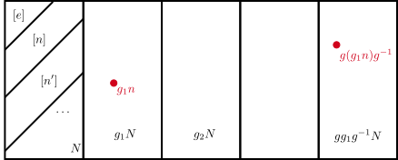
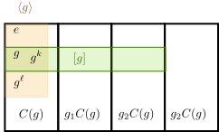

\gdef\red#1{{\color{cb8680}{#1}}} \gdef\green#1{{\color{4f8d63}{#1}}} \gdef\gray#1{{\color{gray}{#1}}} \gdef\purple#1{{\color{B189C6}{#1}}} \gdef\orange#1{{\color{dfa04b}{#1}}} \gdef\white#1{{\color{fffff}{#1}}} \gdef\blue#1{{\color[rgb]{0.20, 0.43, 0.75}{#1}}} \gdef\yellow#1{{\color[rgb]{0.984375, 0.9140625, 0.62109375}{#1}}}
《群论》
两位任课老师：
潘逸文 (除第6-9周外)：panyw5@mail.sysu.edu.cn
张宏浩 (第6-9周)：zhh98@mail.sysu.edu.cn
考核方式：期末 60% + 平时 40%
作业：可以 1-5 个同学组成一组共同完成。
课程主页 (课件、作业、其他资源分享)
课程主页
诺特 (Noether) 定理: 物理理论的每一个连续对称性都有一个对应的守恒律
全新的思维方式：基于规则的数学秩序 (rules-based order)
最重要的 不是 东西/对象本身，而是 结构、关系 与 行为
⇒\Rightarrow⇒ 完全抽象 (看不见摸不着) 的数学对象
⇒\Rightarrow⇒ 对抽象思维提出比较高的要求
抽象的层次
本课程会深入到抽象第四层
完全抽象的结构 可以 实现为物理系统中的具体的物理操作
父亲是一名 (法国的) 共和党人，本地村长
伽罗华 18 岁时父亲在村中一场政治纷争中自杀身亡
1831年 5 月，伽罗华因「企图刺杀国王」被捕入狱并结识若干革命伙伴，但很快被释放
之后也因政治活动多次入狱，并在狱中继续发展其数学理论
出狱后，爱上了革命伙伴的的未婚妻，并与其相约决斗 [存疑]。
1832 年 5 月 29 日晚上，伽罗华作生命中最后的计算，在笔记页边留下「我没有时间了」等字样，手稿寄给了好友奥古斯特·谢瓦利埃（Auguste Chevalier）
其他说法
也有说法是决斗前早就做好的笔记。
1832 年 5 月 30 日凌晨，群论诞生。
5 月 30 日早上，伽罗华在决斗中腹部中枪
1832 年 5 月 31 日上午 10 点，伽罗华在医院去世
数学家赫尔曼·外尔 (Hermann Weyl) 评价伽罗华的手稿：
如果从这封信所包含思想的新颖性和深刻性来判断，它也许是整个人类文献中最丰富的一篇文章。
——Hermann Weyl
1843年，约瑟夫·刘维尔（Joseph Liouville）审阅了伽罗瓦的手稿，并宣布它是正确的。这篇论文最终在1846年，也就是伽罗瓦死后14年出版。
实数 和 复数 有丰富的二元运算：加、乘
熟知的性质：
加法 结合律
乘法结合律
加法 交换律
乘法 交换律
加乘 分配律
加法逆运算 必然存在
乘法逆运算 几乎总是存在
矩阵 之间也有丰富的运算：加、乘
设 GGG 是一个集合
定义一个 乘法 ⋅\cdot⋅，使得对任何两个群元 g1,g2∈Gg_1, g_2 \in Gg1,g2∈G 都有 g1⋅g2∈Gg_1 \cdot g_2 \orange{\in G}g1⋅g2∈G (封闭性)。
倘若集合 GGG 以及乘法 ⋅\cdot⋅ 满足如下性质，则称 (G,⋅)(G, \cdot)(G,⋅) 形成一个 群 (group)，而相应的运算 ⋅\cdot⋅ 称为 群乘法 (group multiplication)，群元数量 ∣G∣|G|∣G∣ 称为 群的阶 (order)
结合律：g1⋅(g2⋅g3)=(g1⋅g2)⋅g3g_1 \cdot (g_2 \cdot g_3) = (g_1 \cdot g_2) \cdot g_3g1⋅(g2⋅g3)=(g1⋅g2)⋅g3，∀g1,g2,g3∈G\forall g_1, g_2, g_3 \in G∀g1,g2,g3∈G。
存在 单位元 e∈Ge \in Ge∈G 使得 e⋅g=g⋅e=g∈Ge \cdot g = g \cdot e = g \in Ge⋅g=g⋅e=g∈G，∀g∈G\forall g \in G∀g∈G。
存在 逆元 ∃g−1∈G\exists g^{-1} \in G∃g−1∈G，使得 g−1⋅g=g⋅g−1=eg^{-1} \cdot g = g \cdot g^{-1} = eg−1⋅g=g⋅g−1=e，∀g∈G\forall g \in G∀g∈G。
四个性质
封闭，结合，单位元，逆元。
省略 ⋅ ~\cdot~ ⋅
在下面的讨论中我们往往省略符号 ⋅ ~\cdot~ ⋅ ，或者用 其它符号 代替。
没有交换律
群的定义中 没有引入交换律，即 g1⋅g2g_1 \cdot g_2g1⋅g2 一般而言 不等于 g2⋅g1g_2 \cdot g_1g2⋅g1。这与实数、复数的乘法不同，更像是 矩阵乘法：在后面会学到，合适的矩阵能够用于表示群的元素。
在物理中，群可以用于刻画 对称操作
所谓对称操作，是指保持某个物理系统不变的操作
实空间的平移、转动、反射、时间反演，电荷共轭，内部空间的操作，对动力学对象的直接操作等
对称操作的 复合 还是对称操作
对称操作总是有 逆操作
恒等操作 等于啥都不做
对称操作的复合显然应当满足 结合律
群元常用标记 g1,g2,g3...g_1, g_2, g_3 ...g1,g2,g3...，或者 g,g′,g′′,…g, g', g'', \dotsg,g′,g′′,…, 或者 a,b,…,g,h,…a, b, \dots, g, h, \dotsa,b,…,g,h,…
对于群元较少的群，可以通过列出群元的 乘法表 来描述群的乘法规则
{gg′ ∣ all g′∈G}={g′g ∣ all g′∈G}=G .\begin{align*} \{g g' \ | \ \text{all } g' \in G\} = \{g' g \ | \ \text{all } g' \in G\} = G \ . \end{align*} {gg′ ∣ all g′∈G}={g′g ∣ all g′∈G}=G .
重排定理示意：选 g=eg = eg=e
重排定理示意：选其它 ggg
重排定理的证明
可逆性
可逆性，或者说重排定理，使得群乘法 不会丢失 群元/信息。
人生中，若非迫不得已，尽可能做可逆的事情，避免走上不归路。
gn≔ g⋅g⋅…⋅g⏟n 个,n=1,2,3,…gn≔ g−1⋅g−1⋅…⋅g−1⏟∣n∣ 个,n=−1,−2,−3,…g0≔ e,n=0 .\begin{align*} g^n \coloneqq & \ \underbrace{g \cdot g \cdot \ldots \cdot g}_{n \text{ 个}}, & n & = 1, 2, 3, \ldots\\ g^{n} \coloneqq & \ \underbrace{g^{-1}\cdot g^{-1} \cdot \ldots \cdot g^{-1}}_{|n| \text{ 个}}, & n & = - 1, - 2, -3, \ldots\\ g^0 \coloneqq & \ e, & n & = 0 \ . \end{align*} gn:=gn:=g0:= n 个g⋅g⋅…⋅g, ∣n∣ 个g−1⋅g−1⋅…⋅g−1, e,nnn=1,2,3,…=−1,−2,−3,…=0 .
有限群常见例子：循环群、置换群、二面体群、晶体点群
无限离散群例子：
(1) 整数加群 Z\mathbb{Z}Z、晶体离散平移群
(2) 有理数加群 Q\mathbb{Q}Q
(3) 晶体空间群
李群例子：
(1) 实数加群 R\mathbb{R}R、时间空间平移群
(2) 复数加群 C\mathbb{C}C
(3) 线性空间 Rn\mathbb{R}^nRn
(4) U(1)U(1)U(1) 群、二维平面转动群 SO(2)SO(2)SO(2)
(5) 三维空间转动群 SO(3)SO(3)SO(3)
∣G∣=1\begin{align*} |G| = 1 \end{align*}∣G∣=1
a+b≔a+整数加法bmod n .\begin{align*} a + b \coloneqq a +_\text{整数加法} b \mod n \ . \end{align*}a+b:=a+整数加法bmodn .
定理：(Zn,+)(\mathbb{Z}_n, +)(Zn,+) 是一个有限群，称为 nnn-阶循环 (cyclic) 群
例子
考虑 n=2n = 2n=2。则 Z2={0,1}\mathbb{Z}_2 = \{0,1\}Z2={0,1}。乘法运算为
0+0=0,0+1=1mod 2=1,1+1=2mod 2=0 .\begin{align*} 0 + 0 = 0, \qquad 0 + 1 = 1 \mod 2 = 1, \qquad 1 + 1 = 2 \mod 2 = 0\ . \nonumber \end{align*}0+0=0,0+1=1mod2=1,1+1=2mod2=0 .
n=2n = 2n=2
显然 000 是 单位元：000 的逆元是自己，而 111 的逆元也是自己，因为
1+1=2mod 2=0 .\begin{align*} 1 + 1 = 2 \mod 2 = 0\ . \end{align*} 1+1=2mod2=0 .
用一个表格来记录乘法的结果，得到 乘法表。
每一行、每一列都是对两个群元的一个 重新排列。
n=3n = 3n=3
考虑 n=3n = 3n=3。则 Z3={0,1,2}\mathbb{Z}_3 = \{0,1,2\}Z3={0,1,2}。乘法运算为
0+0= 0,0+1=1,0+2=21+1= 2,1+2=3mod 3=02+2= 4mod 3=1 .\begin{align*} 0 + 0 = & \ 0, \qquad 0 + 1 = 1, \qquad 0 + 2 = 2 \\ 1 + 1 = & \ 2, \qquad 1 + 2 = 3 \mod 3 = 0 \\ 2 + 2 = & \ 4 \mod 3 = 1\ . \end{align*} 0+0=1+1=2+2= 0,0+1=1,0+2=2 2,1+2=3mod3=0 4mod3=1 .
单位元是 000，其逆为自己。111 与 222 互为逆元。
用乘法表来标记乘法结果
可见每一行、每一列都是对 3 个群元的 重新排列。
Zn\mathbb{Z}_nZn 的第二 定义
Zn≔{1,e2πin,e4πin,⋯ ,e2π(n−1)in} .\begin{align*} \mathbb{Z}_n \coloneqq \{1, e^{\frac{2\pi i}{n}}, e^{\frac{4\pi i}{n}}, \cdots , e^{\frac{2\pi (n - 1) i}{n}} \} \ . \end{align*} Zn:={1,en2πi,en4πi,⋯,en2π(n−1)i} .
Z7\mathbb{Z}_{7}Z7
群乘法重新记为 复数乘法
e2πina⋅e2πinb=e2πin(a+bmod n)=e2πin(a+b) .\begin{align*} e^{\frac{2\pi i}{n} a} \cdot e^{\frac{2\pi i}{n} b} = e^{\frac{2\pi i}{n} (a + b \mod n)} = e^{\frac{2\pi i}{n} (a + b)}\ . \end{align*} en2πia⋅en2πib=en2πi(a+bmodn)=en2πi(a+b) .
modn\operatorname{mod} nmodn 与不 modn\operatorname{mod} nmodn
在复数表示法中，由于 e2πin(nk)=1e^{\frac{2\pi i}{n} (n k)} = 1en2πi(nk)=1，因此 modn\operatorname{mod} nmodn 操作可以从乘法定义中 省去。
元素与乘法
当 n=2n = 2n=2，Z2\mathbb{Z}_2Z2 的复数表示即为
Z2={1,eπi=−1} .\begin{align*} \mathbb{Z}_2 = \{1, e^{\pi i} = -1\}\ . \end{align*}Z2={1,eπi=−1} .
注意，所含元素 不是 之前的 {0,1}\{0,1\}{0,1}：此处的群乘法是复数乘法。
Zn≔{a0≔e,a,a2,…,an−1∣an≔e} ,\begin{align*} \mathbb{Z}_n \coloneqq \{a^0 \coloneqq e, a, a^2, \ldots, a^{n - 1} \mid \green{a^n \coloneqq e}\} \ , \end{align*} Zn:={a0:=e,a,a2,…,an−1∣an:=e} ,
ak⋅aℓ≔ak+ℓ=ak+ℓmod n .\begin{align*} a^k \cdot a^\ell \coloneqq a^{k + \ell} = a^{k + \ell \mod n} \ . \end{align*} ak⋅aℓ:=ak+ℓ=ak+ℓmodn .
和而不同
三种不同的定义实际上是 等价 的。在讨论 群 的时候，我们最关心的不是群元的具体信息，而是群元 之间的乘法关系，乘法的结构。
基于这一原则，看起来不同的群具有 相同的代数结构，从而在一定语境下可以看成是一样/等价的群。
根据所用的约定，循环群 Zn\mathbb{Z}_nZn 的任何一个元素都可以用 111 或者 e2πine^{\frac{2\pi i}{n}}en2πi 或者 aaa 通过群乘法获得：称为其为 Zn\mathbb{Z}_nZn 的 生成元 (generator)
生成元不是生成元
有限群的生成元跟李代数的生成元 不是一个东西。
H=−∑⟨ij⟩Jijσiσj .\begin{align*} H = - \sum_{\langle ij\rangle} J_{ij}\sigma_i \sigma_j \ . \end{align*} H=−⟨ij⟩∑Jijσiσj .
id:σi→σi,π:σi→−σi ,all i .\begin{align*} \operatorname{id}:\sigma_i \to \sigma_i, \quad \pi:\sigma_i \to - \sigma_i \ ,\qquad \text{all } i\ . \end{align*} id:σi→σi,π:σi→−σi ,all i .
T:σi→σi+1\mathcal{T}: \sigma_{i} \to \sigma_{i + 1} T:σi→σi+1
ZN={id=T0,T1,⋯ ,TN−1}\mathbb{Z}_N = \{\operatorname{id}=\mathcal{T}^0, \mathcal{T}^1, \cdots, \mathcal{T}^{N - 1}\} ZN={id=T0,T1,⋯,TN−1}
闭环上的量子 Ising 模型、XXX、XXZ 模型：
H=J2∑n=1N∑a=x,y,zσnaσn+1a,σn=σn+NH = \frac{J}{2} \sum_{n = 1}^{N} \sum_{a = x,y,z}\sigma_n^a \sigma^a_{n + 1} , \qquad \sigma_n = \sigma_{n + N} H=2Jn=1∑Na=x,y,z∑σnaσn+1a,σn=σn+N
Pauli 矩阵 σx,y,z\sigma^{x,y,z}σx,y,z
T:σn→σn+1\mathcal{T}:\sigma_n \to \sigma_{n + 1}T:σn→σn+1，哈密顿量保持不变，T:H→H\mathcal{T}:H \to HT:H→H
T∣α1,α2,⋯ ,αN⟩=∣αN,α1,⋯ ,αN−1⟩,αi=±1\mathcal{T}|\alpha_1, \alpha_2, \cdots, \alpha_N\rangle = |\alpha_N, \alpha_1, \cdots, \alpha_{N -1} \rangle, \qquad \alpha_i = \pm 1 T∣α1,α2,⋯,αN⟩=∣αN,α1,⋯,αN−1⟩,αi=±1
[T,H]=0[\mathcal{T}, H] = 0 [T,H]=0
ZN={T0,T1,⋯ ,TN−1}\mathbb{Z}_N = \{\mathcal{T}^0, \mathcal{T}^1, \cdots, \mathcal{T}^{N - 1}\} ZN={T0,T1,⋯,TN−1}
H=p22m+V(x),V(x)=V(−x) .\begin{align*} H = \frac{p^2}{2m} + V(x), \qquad V(x) = V(-x) \ . \end{align*} H=2mp2+V(x),V(x)=V(−x) .
id:ψ(x)→ψ(x),or,P:ψ(x)→ψ(−x) ,\begin{align*} \operatorname{id}:\psi(x) \to \psi(x), \qquad \text{or}, \qquad \operatorname{P}:\psi(x) \to \psi(-x) \ , \end{align*} id:ψ(x)→ψ(x),or,P:ψ(x)→ψ(−x) ,
(Pψ)(x)≔ψ(−x)(\operatorname{P}\psi)(x)\coloneqq\psi(-x)(Pψ)(x):=ψ(−x) 与 ψ(x)\psi(x)ψ(x) 具有相同能量：简并？
对于一维系统：束缚态 没有简并，即使存在对称性
Eψ=Eψ′⇔ψ=λψ′,λ∈C∗E_\psi = E_{\psi'} \Leftrightarrow \psi = \lambda \psi', \qquad \lambda \in \mathbb{C}^* Eψ=Eψ′⇔ψ=λψ′,λ∈C∗
这要求本征态 ψ\psiψ 具有明确宇称：Pψ=±ψ\operatorname{P}\psi = \pm \psiPψ=±ψ
但对于周期性边界条件系统，能级可能会出现简并
对称性的能力
对称性分析能给出「原则上」会有什么结果，但 不保证 刚好出现那个结果
Aμ→U−1AμU+iU−1∂μU .\begin{equation*} A_\mu \to U^{-1} A_\mu U + i U^{-1} \partial_\mu U \ . \end{equation*} Aμ→U−1AμU+iU−1∂μU .
Aμ→U−1AμU+iU−1∂μU ,\begin{equation*} A_\mu \to U^{-1} A_\mu U + i U^{-1} \partial_\mu U \ , \end{equation*} Aμ→U−1AμU+iU−1∂μU ,
trFμν(t)Fμν(t)→ trU−1(t)Fμν(t)U(t)U−1(t)Fμν(t)U(t)= trFμν(t)Fμν(t) .\begin{align*} \operatorname{tr}F_{\mu \nu}(t)F^{\mu \nu}(t) \to & \ \operatorname{tr} U^{-1}(t) F_{\mu \nu}(t) U(t) U^{-1}(t)F^{\mu \nu}(t) U(t)\\ = & \ \operatorname{tr}F_{\mu \nu}(t)F^{\mu \nu}(t) \ .\nonumber \end{align*} trFμν(t)Fμν(t)→= trU−1(t)Fμν(t)U(t)U−1(t)Fμν(t)U(t) trFμν(t)Fμν(t) .
TrPei∮A→ TrP[U(t+β)−1ei∮AU(t)]= TrP[ei∮AU(t)U(t)−1z]= zTrPei∮A .\begin{align*} \operatorname{Tr} \mathcal{P}e^{ i \oint A} \to & \ \operatorname{Tr}\mathcal{P}[\orange{U(t + \beta)^{-1}} e^{ i \oint A} U(t)] \nonumber\\ = & \ \operatorname{Tr}\mathcal{P}[ e^{ i \oint A} U(t) \orange{U(t)^{-1} z}] \nonumber \\ = & \ z \operatorname{Tr} \mathcal{P}e^{ i \oint A} \ . \end{align*} TrPei∮A→== TrP[U(t+β)−1ei∮AU(t)] TrP[ei∮AU(t)U(t)−1z] zTrPei∮A .
置换群：刻画多个物体之间的 换位操作。
刻画多个物体之间的 换位操作。
考虑一个 nnn-元 集合 Mn≔{1,…,n}M_n \coloneqq \{1, \ldots, n\}Mn:={1,…,n}
我们关心 MnM_nMn 中元素的 置换/重排
12⋯nσ↓↓↓5n−1⋯2,或12⋯nσ↓↓↓42⋯n−4,⋯\begin{equation*} \begin{matrix} & 1 & 2 & \cdots & n\\ \sigma & \downarrow & \downarrow & & \downarrow\\ & 5 & n - 1 & \cdots & 2 \end{matrix}, \quad \text{或} \quad \begin{matrix} & 1 & 2 & \cdots & n\\ \sigma & \downarrow & \downarrow & & \downarrow\\ & 4 & 2 & \cdots & n - 4 \end{matrix}, \quad \cdots \end{equation*} σ1↓52↓n−1⋯⋯n↓2,或σ1↓42↓2⋯⋯n↓n−4,⋯
一一对应
没有重复，也没有遗漏。
σ(a)≠σ(b)ifa≠b, a,b∈Mn,Imσ=Mn .\begin{align*} \sigma(a) \ne \sigma(b) \quad \text{if} \quad a \ne b, \ a, b\in M_n , \qquad \operatorname{Im}\sigma = M_n \ . \end{align*} σ(a)=σ(b)ifa=b, a,b∈Mn,Imσ=Mn .
n=1n = 1n=1
当 n=1n = 1n=1，则 M1={1}M_1 = \{1\}M1={1}。σ\sigmaσ 作为 Mn→MnM_n \to M_nMn→Mn 的双射，必然有
σ(1)=1 .\begin{align*} \sigma(1) = 1\ . \end{align*} σ(1)=1 .
因此 S1={σ=id}S_1 = \{\sigma = \text{id}\}S1={σ=id}。
σ\sigmaσ 与自己的群乘法为自我复合，
(σ⋅σ)(1)=σ(σ(1))=σ(1)=1 .\begin{align*} (\sigma \cdot \sigma) (1) = \sigma (\sigma(1)) = \sigma(1) = 1\ . \end{align*} (σ⋅σ)(1)=σ(σ(1))=σ(1)=1 .
因此 σ⋅σ=σ\sigma \cdot \sigma = \sigmaσ⋅σ=σ，即 σ\sigmaσ 既是单位元，也是自己的逆元。因此 S1S_1S1 是一个平凡群。
只有一个元素的群
只有一个元素的群必然是平凡群。
n=2n = 2n=2 当 n=2n = 2n=2，M2={1,2}M_2 = \{1,2\}M2={1,2}。有两个 M2→M2M_2 \to M_2M2→M2 的可逆映射 σ1,σ2\sigma_1, \sigma_2σ1,σ2。
σ1(1)= 1,σ1(2)=2 ,σ2(1)= 2,σ2(2)=1 .\begin{align*} \sigma_1 (1) = & \ 1, \qquad \sigma_1(2) = 2 \ , \\ \sigma_2 (1) = & \ 2, \qquad \sigma_2(2) = 1 \ . \end{align*}σ1(1)=σ2(1)= 1,σ1(2)=2 , 2,σ2(2)=1 .
于是，S2={σ1,σ2}S_2 = \{\sigma_1, \sigma_2\}S2={σ1,σ2}。
群元的乘法是映射的复合。
(σ1⋅σ1)(1)=σ1(σ1(1))=σ1(1)=1 ,(σ1⋅σ1)(2)=σ1(σ1(2))=σ1(2)=2 .\begin{align*} \orange{(\sigma_1 \cdot \sigma_1)}(\orange{1}) = \sigma_1(\sigma_1(1)) = \orange{\sigma_1}(\orange{1}) = 1 \ , \\ \orange{(\sigma_1 \cdot \sigma_1)}(\orange{2}) = \sigma_1(\sigma_1(2)) = \orange{\sigma_1}(\orange{2}) = 2 \ . \end{align*} (σ1⋅σ1)(1)=σ1(σ1(1))=σ1(1)=1 ,(σ1⋅σ1)(2)=σ1(σ1(2))=σ1(2)=2 .
于是 σ1⋅σ1=σ1\sigma_1 \cdot \sigma_1 = \sigma_1σ1⋅σ1=σ1。
σ1\sigma_1σ1 与 σ2\sigma_2σ2 复合得到
(σ1⋅σ2)(1)=σ1(σ2(1))=σ1(2)=2=σ2(1) ,(σ1⋅σ2)(2)=σ1(σ2(2))=σ1(1)=1=σ2(2) .\begin{align*} (\sigma_1 \cdot \sigma_2)\orange{(1)} = \sigma_1(\sigma_2(1)) = \sigma_1(2) = 2 = \sigma_2\orange{(1)} \ , \\ (\sigma_1 \cdot \sigma_2)\orange{(2)} = \sigma_1(\sigma_2(2)) = \sigma_1(1) = 1 = \sigma_2\orange{(2)} \ . \end{align*} (σ1⋅σ2)(1)=σ1(σ2(1))=σ1(2)=2=σ2(1) ,(σ1⋅σ2)(2)=σ1(σ2(2))=σ1(1)=1=σ2(2) .
于是 σ1⋅σ2=σ2\sigma_1 \cdot \sigma_2 = \sigma_2σ1⋅σ2=σ2。
σ2\sigma_2σ2 与 σ1\sigma_1σ1 的复合得到
(σ2⋅σ1)(1)=σ2(σ1(1))=σ2(1)=2=σ2(1) ,(σ2⋅σ1)(2)=σ2(σ1(2))=σ2(2)=1=σ2(2) .\begin{align*} (\sigma_2 \cdot \sigma_1)\orange{(1)} = \sigma_2 (\sigma_1(1)) = \sigma_2(1) = 2 = \sigma_2\orange{(1)} \ ,\\ (\sigma_2 \cdot \sigma_1)\orange{(2)} = \sigma_2 (\sigma_1(2)) = \sigma_2(2) = 1 = \sigma_2\orange{(2)}\ . \end{align*} (σ2⋅σ1)(1)=σ2(σ1(1))=σ2(1)=2=σ2(1) ,(σ2⋅σ1)(2)=σ2(σ1(2))=σ2(2)=1=σ2(2) .
于是 σ2⋅σ1=σ2\sigma_2 \cdot \sigma_1 = \sigma_2σ2⋅σ1=σ2。
σ2\sigma_2σ2 与 σ2\sigma_2σ2 的复合得到
(σ2⋅σ2)(1)=σ2(σ2(1))=σ2(2)=1=σ1(1) ,(σ2⋅σ2)(2)=σ2(σ2(2))=σ2(1)=2=σ1(2) .\begin{align*} (\sigma_2 \cdot \sigma_2)\orange{(1)} = \sigma_2 (\sigma_2(1)) = \sigma_2(2) = 1 = \sigma_1\orange{(1)} \ ,\\ (\sigma_2 \cdot \sigma_2)\orange{(2)} = \sigma_2 (\sigma_2(2)) = \sigma_2(1) = 2 = \sigma_1\orange{(2)}\ . \end{align*} (σ2⋅σ2)(1)=σ2(σ2(1))=σ2(2)=1=σ1(1) ,(σ2⋅σ2)(2)=σ2(σ2(2))=σ2(1)=2=σ1(2) .
于是 σ2⋅σ2=σ1\sigma_2 \cdot \sigma_2 = \sigma_1σ2⋅σ2=σ1。
总结起来：σ1\sigma_1σ1 是 单位元，σ2\sigma_2σ2 是自己的 逆元，
σ1⋅σi=σi⋅σ1=σi,σ2⋅σ2=σ1 .\begin{align*} \sigma_1 \cdot \sigma_i = \sigma_i \cdot \sigma_1 = \sigma_i, \qquad \sigma_2\cdot \sigma_2 = \sigma_1 \ . \end{align*} σ1⋅σi=σi⋅σ1=σi,σ2⋅σ2=σ1 .
显然，这个代数结构跟 Z2\mathbb{Z}_2Z2 的代数结构是等价的，
e⋅e=e,e⋅a=a⋅e=a,a⋅a=e .\begin{align*} e \cdot e = e, \qquad e \cdot a = a \cdot e = a, \qquad a \cdot a = e \ . \end{align*} e⋅e=e,e⋅a=a⋅e=a,a⋅a=e .
于是，在常见语境中，S2S_2S2 与 Z2\mathbb{Z}_2Z2 等价。
每一个 Mn→MnM_n \to M_nMn→Mn 的双射实际上是对 MnM_nMn 中元素的一个 重新排列：∣Sn∣=Ann=n!|S_n| = A_n^n = n!∣Sn∣=Ann=n!。
置换群元的普遍存在性
只要一个操作涉及把某些东西进行换位、相互移动，都可以 一定程度 上等价为某个置换群中的元素。
(12⋯nσ(1)σ(2)⋯σ(n))\begin{align*} \begin{pmatrix} 1 & 2 & \cdots & n\\ \sigma(1) & \sigma(2) & \cdots & \sigma(n) \end{pmatrix} \end{align*} (1σ(1)2σ(2)⋯⋯nσ(n))
例子 n=3n = 3n=3
考虑 n=3n = 3n=3。设 σ∈S3\sigma \in S_3σ∈S3 满足
σ(1)=3,σ(2)=1,σ(3)=2 .\begin{align*} \sigma(1) = 3, \qquad \sigma(2) = 1, \qquad \sigma(3) = 2 \ . \end{align*} σ(1)=3,σ(2)=1,σ(3)=2 .
用两行记号法，
σ≔(123312),or(312231) ,⋯\begin{align*} \sigma \coloneqq \begin{pmatrix} 1 & 2 & 3\\ 3 & 1 & 2 \end{pmatrix}, \quad \text{or} \quad \begin{pmatrix} 3 & 1 & 2\\ 2 & 3 & 1 \end{pmatrix}\ , \quad \cdots \end{align*} σ:=(132132),or(321321) ,⋯
考虑另一个置换 μ∈S3\mu \in S_3μ∈S3 使得
μ(1)=2,μ(2)=3,μ(3)=1 ,\begin{align*} \mu(1) = 2, \qquad \mu(2) = 3, \qquad \mu(3) = 1\ , \end{align*} μ(1)=2,μ(2)=3,μ(3)=1 ,
可以标记
μ≔(123231),or(312123) ,⋯ .\begin{align*} \mu \coloneqq \begin{pmatrix} 1 & 2 & 3\\ 2 & 3 & 1 \end{pmatrix}, \quad \text{or} \quad \begin{pmatrix} 3 & 1 & 2\\ 1 & 2 & 3 \end{pmatrix}\ , \quad \cdots \ . \end{align*} μ:=(122331),or(311223) ,⋯ .
二行记号的偷懒写法
如果在某个置换操作中，某些元素没有发生变化，可以把这些元素所属的列 省略，比如
(12341243)=(3443)\begin{pmatrix} 1 & 2 & 3 & 4 \\ 1 & 2 & 4 & 3 \end{pmatrix} = \begin{pmatrix} 3 & 4 \\ 4 & 3 \end{pmatrix} (11223443)=(3443)
从偷懒写法出发，可以尝试还原完整写法 (默认补全到已出现的最大数值)，比如
(1771)=(12345677234561)\begin{pmatrix} 1 & 7 \\ 7 & 1 \end{pmatrix} = \begin{pmatrix} 1 & 2 & 3 & 4 & 5 & 6 & 7 \\ 7 & 2 & 3 & 4 & 5 & 6 & 1 \end{pmatrix} (1771)=(17223344556671)
计算 μ,σ\mu, \sigmaμ,σ 的复合映射，
μ⋅σ= (123231)⋅(123312)= (312123)⋅(123312)=(123123)=id .\begin{align*} \mu \cdot \sigma = & \ \begin{pmatrix} 1 & 2 & 3 \\ 2 & 3 & 1 \end{pmatrix} \cdot \begin{pmatrix} 1 & 2 & 3\\ \boxed{3} & \boxed{1} & \boxed{2} \end{pmatrix} \\ = & \ \begin{pmatrix} \boxed{3} & \boxed{1} & \boxed{2}\\ 1 & 2 & 3 \end{pmatrix} \cdot \begin{pmatrix} 1 & 2 & 3\\ \boxed{3} & \boxed{1} & \boxed{2} \end{pmatrix} = \begin{pmatrix} 1 & 2 & 3\\ 1 & 2 & 3 \end{pmatrix} = \operatorname{id} \ . \nonumber \end{align*} μ⋅σ== (122331)⋅(132132) (311223)⋅(132132)=(112233)=id .
σ=(1234535124)\begin{align*} \sigma = \begin{pmatrix} 1 & 2 & 3 & 4 & 5\\ 3 & 5 & 1 & 2 & 4 \end{pmatrix} \end{align*} σ=(1325314254)
(1234535124)→(13⋯ )\begin{align*} \begin{pmatrix} \boxed{1} & 2 & 3 & 4 & 5\\ \boxed{3} & 5 & 1 & 2 & 4 \end{pmatrix} \quad \to \qquad (13\cdots) \end{align*} (1325314254)→(13⋯)
(1234535124)→(13)\begin{align*} \begin{pmatrix} \boxed{1} & 2 & \boxed{3} & 4 & 5\\ \boxed{3} & 5 & \boxed{1} & 2 & 4 \end{pmatrix} \quad \to \qquad (13) \end{align*} (1325314254)→(13)
(1234535124)→(13)(25⋯ )\begin{align*} \begin{pmatrix} 1 & \boxed{2} & 3 & 4 & 5\\ 3 & \boxed{5} & 1 & 2 & 4 \end{pmatrix} \quad \to \qquad (13)(25\cdots) \end{align*} (1325314254)→(13)(25⋯)
(1234535124)→(13)(254)\begin{align*} \begin{pmatrix} 1 & \boxed{2} & 3 & 4 & \boxed{5}\\ 3 & \boxed{5} & 1 & 2 & \boxed{4} \end{pmatrix} \quad \to \qquad (13)(254) \end{align*} (1325314254)→(13)(254)
σ=(c11c12…c1p1)⏟c1(c21c22…c2p2)⏟c2… .\begin{align*} \sigma = \underbrace{(c_{11}c_{12}\ldots c_{1 p_1})}_{c_1} \underbrace{(c_{21}c_{22}\ldots c_{2 p_2})}_{c_2} \ldots \ . \end{align*} σ=c1(c11c12…c1p1)c2(c21c22…c2p2)… .
∑ipi=n .\begin{align*} \sum_{i} p_i = n \ . \end{align*} i∑pi=n .
(17483)(256)=(256)(17483) .\begin{align*} (17483)(256) = (256)(17483) \ . \end{align*} (17483)(256)=(256)(17483) .
(顶针) 定理：首尾相接 的两个 轮换 可以 复合 成大轮换，比如 (其中 a,b,c,d,e,f,ha,b,c,d,e,f,ha,b,c,d,e,f,h 互异)
(ab)(bcd)=(abcd) ,(abcde)(efgh)=(abcdefgh) .\begin{align*} (ab)(bcd) = (abcd) \ , \qquad (abcde)(efgh) = (abcdefgh) \ . \end{align*} (ab)(bcd)=(abcd) ,(abcde)(efgh)=(abcdefgh) .
轮换拆解
可以 反过来 用：把大轮换拆解成 有交 小轮换的乘积：拆解方法 不唯一。
轮换的融合
直接计算
(abba)(bcdcdb)=(abba)(abcdacdb)= (abba)(adbcabcd)=(adbcbacd)= (abcdbcda)=(abcd) .\begin{align*} & \ \begin{pmatrix} a & b\\ b & a \end{pmatrix} \begin{pmatrix} b & c & d\\ c & d & b \end{pmatrix} = \begin{pmatrix} \boxed{a} & \boxed{b}\\ b & a \end{pmatrix} \begin{pmatrix} a & b & c & d\\ a & c & d & b \end{pmatrix}\\ = & \ \begin{pmatrix} \boxed{a} & \boxed{b}\\ b & a \end{pmatrix} \begin{pmatrix} a & d & b & c\\ \boxed{a} & \boxed{b} & c & d \end{pmatrix} = \begin{pmatrix} a & d & b & c\\ b & a & c & d \end{pmatrix} \\ = & \ \begin{pmatrix} a & b & c & d\\ b & c & d & a \end{pmatrix} = (abcd)\ . \end{align*} == (abba)(bccddb)=(abba)(aabccddb) (abba)(aadbbccd)=(abdabccd) (abbccdda)=(abcd) .
S3S_3S3 的循环
S3S_3S3 有 6 个群元，
{id, (12), (23), (31), (123), (132)}= {id, (12)(3), (23)(1), (31)(2), (123), (132)} .\begin{align*} & \ \{\operatorname{id}, \ (12), \ (23), \ (31), \ (123), \ (132)\}\\ = & \ \{\operatorname{id}, \ (12)(3), \ (23)(1), \ (31)(2), \ (123), \ (132)\} \ . \end{align*} = {id, (12), (23), (31), (123), (132)} {id, (12)(3), (23)(1), (31)(2), (123), (132)} .
因此，S3S_3S3 有
(1) 1 个 1-cycle
(2) 3 个 2-cycle
(3) 2 个 3-cycle
乘法结果
(12)(23)= (123),(12)(31)=(21)(13)=(213),…(123)(123)= (123231)(123231)=(123312)=(132)(123)(132)= (123231)(123312)=(123123)=id .\begin{align*} (12)(23) = & \ (123), \qquad (12)(31) = (21)(13) = (213), \ldots\\ (123)(123) = & \ \begin{pmatrix} 1 & 2 & 3\\ 2 & 3 & 1 \end{pmatrix} \begin{pmatrix} 1 & 2 & 3\\ 2 & 3 & 1 \end{pmatrix} = \begin{pmatrix} 1 & 2 & 3\\ 3 & 1 & 2 \end{pmatrix} = (132) \\ (123)(132) = & \ \begin{pmatrix} 1 & 2 & 3\\ 2 & 3 & 1 \end{pmatrix} \begin{pmatrix} 1 & 2 & 3\\ 3 & 1 & 2 \end{pmatrix} = \begin{pmatrix} 1 & 2 & 3\\ 1 & 2 & 3 \end{pmatrix} = \operatorname{id} \ . \end{align*} (12)(23)=(123)(123)=(123)(132)= (123),(12)(31)=(21)(13)=(213),… (122331)(122331)=(132132)=(132) (122331)(132132)=(112233)=id .
任何置换都可以分解为 可能相交的 对换 的复合，
σ=(c11c12)(c21c22)… .\begin{align*} \sigma = (c_{11}c_{12}) (c_{21}c_{22}) \ldots \ . \end{align*} σ=(c11c12)(c21c22)… .
其中 ci1≠ci2c_{i1} \ne c_{i2}ci1=ci2，但所涉及的多个对换可能 有交 甚至 完全相同。
对换分解
考虑 n=3n = 3n=3。则轮换 (123)(123)(123) 可以作如下 不同 的分解
(123)=(12)(23)=(12)(12)(12)(23) .\begin{align*} (123) = (12)(23) = (12)(12)(12)(23) \ . \end{align*} (123)=(12)(23)=(12)(12)(12)(23) .
倘若一个置换 σ∈Sn\sigma \in S_nσ∈Sn 能够 分解为奇数个对换的复合，则称其为 奇置换 (odd permutation)
定理 (不作证明)：一个置换要么是奇置换，要么是偶置换。
定理：
偶⋅偶=偶,偶⋅奇=奇,奇⋅奇=偶 .\begin{align*} \text{偶} \cdot \text{偶} = \text{偶}, \quad \text{偶} \cdot \text{奇} = \text{奇}, \quad \text{奇} \cdot \text{奇} = \text{偶} \ . \end{align*} 偶⋅偶=偶,偶⋅奇=奇,奇⋅奇=偶 .
上述乘积结构像什么？
考虑 n=3n = 3n=3，即考虑平面正三角形的旋转和反射对称操作。
这 6 个操作刚好形成 3 个顶点的所有置换
D3= {r0,r1,r2,π0,π1,π2 ∣ rj+3=rj,πj+3=πj}= {e,(123),(132),(23),(12),(13)}\begin{align*} D_3 = & \ \{r_0, \green{r_1, r_2}, \green{\pi_0, \pi_1, \pi_2} \ | \ r_{j + 3} = r_j, \pi_{j + 3} = \pi_j\} \\ = & \ \{e, \green{(123), (132)}, \green{(23), (12), (13)}\} \end{align*} D3== {r0,r1,r2,π0,π1,π2 ∣ rj+3=rj,πj+3=πj} {e,(123),(132),(23),(12),(13)}
rj= 逆时针旋转 120∗j 度πj= 以倾角 π3j 的对称轴为镜面作反射 .\begin{align*} r_j = & \ \text{逆时针旋转 $120 * j$ 度} \\ \pi_j = & \ \text{以倾角 $\frac{\pi}{3}j$ 的对称轴为镜面作反射}\ . \end{align*} rj=πj= 逆时针旋转 120∗j 度 以倾角 3πj 的对称轴为镜面作反射 .
rirj=ri+j,riπj=πi+j,πirj=πi−j,πiπj=ri−j .\begin{align*} r_i r_j = r_{i + j}, \quad r_i \pi_j = \pi_{i + j}, \quad \pi_i r_j = \pi_{i - j}, \quad \pi_i \pi_j = r_{i - j} \ . \end{align*} rirj=ri+j,riπj=πi+j,πirj=πi−j,πiπj=ri−j .
推论
rj−1=r3−j,rjπirj−1=π2j+i,πjπiπj=π2j−i .\begin{align*} r_j^{-1} = r_{3 - j}, \quad r_j\pi_i r_j^{-1} = \pi_{2j + i}, \quad \pi_j \pi_i \pi_j = \pi_{2j - i} \ . \end{align*} rj−1=r3−j,rjπirj−1=π2j+i,πjπiπj=π2j−i .
证明
rjπirj−1=πi+jr3−j=πi+j−(3−j)=π2j+i .\begin{align*} r_j\pi_i r_j^{-1} = \pi_{i + j}r_{3 - j} = \pi_{i + j - (3 - j)} = \pi_{2j + i} \ . \end{align*} rjπirj−1=πi+jr3−j=πi+j−(3−j)=π2j+i .
r0r1r2π0π1π2r0r0r1r2π0π1π2r1r1r2r0π1π2π0r2r2r0r1π2π0π1π0π0π2π1r0r2r1π1π1π0π2r1r0r2π2π2π1π0r2r1r0\begin{array}{|c|c|c|c|c|c|c|} & r_0 & r_1 & r_2 & \pi_0 & \pi_1 & \pi_2 \\ \hline r_0 & r_0 & r_1 & r_2 & \pi_0 & \pi_1 & \pi_2 \\ r_1 & r_1 & r_2 & r_0 & \pi_1 & \pi_2 & \pi_0 \\ r_2 & r_2 & r_0 & r_1 & \pi_2 & \pi_0 & \pi_1 \\ \pi_0 & \pi_0 & \pi_2 & \pi_1 & r_0 & r_2 & r_1 \\ \pi_1 & \pi_1 & \pi_0 & \pi_2 & r_1 & r_0 & r_2 \\ \pi_2 & \pi_2 & \pi_1 & \pi_0 & r_2 & r_1 & r_0 \\ \end{array} r0r1r2π0π1π2r0r0r1r2π0π1π2r1r1r2r0π2π0π1r2r2r0r1π1π2π0π0π0π1π2r0r1r2π1π1π2π0r2r0r1π2π2π0π1r1r2r0
Dn≔{r0,…,rn−1,π0,…πn−1 ∣ rn+j=rj,πn+j=πj} .\begin{align*} D_n \coloneqq \{r_0, \ldots, r_{n - 1}, \pi_0, \ldots \pi_{n - 1}\ | \ r_{n + j} = r_j, \pi_{n + j} = \pi_j \} \ . \end{align*} Dn:={r0,…,rn−1,π0,…πn−1 ∣ rn+j=rj,πn+j=πj} .
Dn={r0,r≔r1, …,rn−1,r0π0,…rn−1π0}\begin{align*} D_n = \{r^0, \green{r \coloneqq r_1}, \ \ldots, r^{n - 1}, r^0\pi_0, \ldots r^{n - 1}\pi_0\} \end{align*} Dn={r0,r:=r1, …,rn−1,r0π0,…rn−1π0}
r1n=e,π02=e,(r1π0)2=e .\begin{align*} r_1^n = e, \qquad \pi_0^2 = e, \qquad (r_1 \pi_0)^2 = e \ . \end{align*} r1n=e,π02=e,(r1π0)2=e .
次简单的二面体群：D2={e,r1,π0,π1}D_2 = \{e, r_1, \pi_0, \pi_1\}D2={e,r1,π0,π1}：刻画一个正二边形 (两条 "重合" 线段) 的平面内对称性
Klein
二面体群 D2D_2D2 常被称作 Klein four-group
与二维平面内正多边形类似，三维空间中 正四面体 可以在一些转动操作下变回自身：固体物理学家称之为 旋转对称操作
可以验证上述操作形成一个群，称为 四面体转动群。
置换群与交错群
上述 12 个转动所形成的群同构于后面介绍的 交错群 A4A_4A4。如果允许加入空间反射，则保持正四面体的旋转反射变换共 242424 个，刚好形成置换群 S4S_4S4。
g1+g2,g+0.2g′+0.9g′′+⋯g_1 + g_2, \qquad g + 0.2 g' + 0.9 g'' + \cdots g1+g2,g+0.2g′+0.9g′′+⋯
g1⋅(λg2+μg3)=λg1⋅g2+μg1⋅g3g_1 \cdot (\lambda g_2 + \mu g_3) = \lambda g_1 \cdot g_2 + \mu g_1 \cdot g_3 g1⋅(λg2+μg3)=λg1⋅g2+μg1⋅g3
定义：设 (G,⋅)(G, \cdot)(G,⋅) 是一个群。若 HHH 是 GGG 的 非空子集，且 HHH 在 GGG 的 群乘法 和 取逆 运算下 封闭，即
h1⋅h2∈H,h−1∈H,∀h1,h2,h∈H ,\begin{equation*} h_1 \cdot h_2 \in H, \quad h^{-1} \in H, \qquad \forall h_1, h_2, h \in H \ , \end{equation*} h1⋅h2∈H,h−1∈H,∀h1,h2,h∈H ,
则 HHH 称为 GGG 的 一个 (HHH-)子群 (subgroup)，记作 H≤GH \le GH≤G。
结构助词与连字符
注意结构助词 "的" 和连字符 "-" 的意思区别
自成一个群
H≤GH \le GH≤G 说明 GGG 的子集 HHH 在群乘法和取逆运算下也形成一个群。
“群 (G,⋅)(G, \cdot)(G,⋅) 的子集 HHH 在群乘法 ⋅\cdot⋅ 下也成群”是子群的另一个等价 定义。
平凡子群
任何一个群 GGG 都必然包含两个 平凡子群：{e}\{e\}{e} 和 GGG 本身。
有限子群
如果 HHH 是 GGG 的 有限 子集，则 HHH 关于 群乘法封闭 已经足够保证 HHH 是 GGG 的子群，不需要 额外的取逆运算封闭性。
这一点学到后面就会理解了。
Z3≤S3\mathbb{Z}_3 \le S_3Z3≤S3
说明
在 S3S_3S3 中有三个特殊的轮换：
id=(),a≔(123),(132) .\begin{align*} \operatorname{id} = (), \qquad \color{titlegreen}{a \coloneqq (123)}, \qquad (132) \ . \end{align*} id=(),a:=(123),(132) .
直接计算可得
a⋅a=(132),a⋅(a⋅a)=(a⋅a)⋅a=id .\begin{align*} a \cdot a = (132), \qquad a \cdot (a \cdot a ) = (a \cdot a) \cdot a = \operatorname{id} \ . \end{align*} a⋅a=(132),a⋅(a⋅a)=(a⋅a)⋅a=id .
于是三个元素在乘法下封闭，形成 Z3\mathbb{Z}_3Z3-子群。
Z2≤Sn\mathbb{Z}_2 \le S_nZ2≤Sn，∀n≥2\forall n \ge 2∀n≥2
Z2\mathbb{Z}_2Z2 是 SnS_nSn 的子群
任选一个对换，比如 (12)(12)(12)，显然
(12)⋅(12)=id .\begin{align*} (12) \cdot (12) = \operatorname{id} \ . \end{align*} (12)⋅(12)=id .
于是 {id,(12)}\{\operatorname{id}, (12)\}{id,(12)} 形成 SnS_nSn 的一个 Z2\mathbb{Z}_2Z2-子群。
多个 Z2\mathbb{Z}_2Z2-子群
上述对换是任意选的，其它选择会导致 不同 的 Z2\mathbb{Z}_2Z2-子群。这些子群具有 相同 的代数结构，但确实是 不同 的子群。因此 Sn≥3S_{n \ge 3}Sn≥3 具有多个 Z2\mathbb{Z}_2Z2-子群。
Z2≤Z4\mathbb{Z}_2 \le \mathbb{Z}_4Z2≤Z4
记 Z4≔{e,a,a2,a3 ∣ a4=e}\mathbb{Z}_4 \coloneqq \{e, a, a^2, a^3 \ | \ a^4 = e\}Z4:={e,a,a2,a3 ∣ a4=e}。显然 {e,a2}\{e, a^2\}{e,a2} 形成一个 Z2\mathbb{Z}_2Z2-子群：
(a2)⋅(a2)=a4=e .\begin{align*} (a^2) \cdot (a^2) = a^4 = e\ . \end{align*} (a2)⋅(a2)=a4=e .
Z4\mathbb{Z}_4Z4 的 Z2\mathbb{Z}_2Z2-子群唯一性
Z4\mathbb{Z}_4Z4 中 只有一个 Z2\mathbb{Z}_2Z2-子群。因为至少要包含一个单位元 eee，剩余的元素 ggg 需要满足 g2=eg^2 = eg2=e：g=a2g = a^2g=a2 是 唯一 的选择。
记 Z2n≔{e,a,a2,…a2n−1 ∣ a2n=e}\mathbb{Z}_{2n} \coloneqq \{e, a, a^2, \ldots a^{2n - 1} \ | \ a^{2n} = e\}Z2n:={e,a,a2,…a2n−1 ∣ a2n=e}。显然 {e,an}\{e, a^n\}{e,an} 形成一个 Z2\mathbb{Z}_2Z2-子群：
(an)⋅(an)=a2n=e .\begin{align*} (a^n) \cdot (a^n) = a^{2n} = e\ . \end{align*}(an)⋅(an)=a2n=e .
这是 Z2n\mathbb{Z}_{2n}Z2n 里 唯一 的 Z2\mathbb{Z}_2Z2-子群。
记 Z2n≔{e,a,a2,…,a2n−1 ∣ a2n=e}\mathbb{Z}_{2n} \coloneqq \{e, a, a^2, \ldots, a^{2n-1}\ | \ a^{2n} = e\}Z2n:={e,a,a2,…,a2n−1 ∣ a2n=e}。假设存在 Z2={e,ak}\mathbb{Z}_2 = \{e, a^k \}Z2={e,ak} 子群，其中 k∈{0,…,2n−1}k \in \{0, \ldots, 2n-1\}k∈{0,…,2n−1}，则要求
(ak)2=e⇒2k=是 2n 的整数倍 .\begin{equation*} (a^k)^2 = e \qquad \Rightarrow \qquad 2k = \text{是} ~ 2n ~ \text{的整数倍} \ . \end{equation*} (ak)2=e⇒2k=是 2n 的整数倍 .
Z2n+1\mathbb{Z}_{2n + 1}Z2n+1 中 没有 Z2\mathbb{Z}_2Z2-子群
记 Z2n+1≔{e,a,a2,…,a2n ∣ a2n+1=e}\mathbb{Z}_{2n + 1} \coloneqq \{e, a, a^2, \ldots, a^{2n}\ | \ a^{2n + 1} = e\}Z2n+1:={e,a,a2,…,a2n ∣ a2n+1=e}。假设存在 Z2={e,ak}\mathbb{Z}_2 = \{e, a^k \}Z2={e,ak} 子群，其中 k∈{0,…,2n}k \in \{0, \ldots, 2n\}k∈{0,…,2n}，则要求
(ak)2=e⇒2k=是 2n+1 的整数倍 .\begin{equation*} (a^k)^2 = e \qquad \Rightarrow \qquad 2k = \text{是} ~ 2n + 1 ~ \text{的整数倍} \ . \end{equation*} (ak)2=e⇒2k=是 2n+1 的整数倍 .
但这显然 不可能。2k2k2k 是偶数，因此至少考虑 2k=(2n+1)×22k = (2n + 1) \times 22k=(2n+1)×2：这已经超出了 2k∈{0,2,…4n}2k \in \{0, 2, \dots 4n\}2k∈{0,2,…4n} 的范围。
后面有 Lagrange 定理 辅助判断：222 不能整除 2n+12n + 12n+1。
2Z≤Z2\mathbb{Z} \le \mathbb{Z}2Z≤Z。
偶数群
全体偶数是 Z\mathbb{Z}Z 加群的子群，因为
(1) 加法单位元 000 是偶数
(2) 偶数加偶数还是偶数
(3) 偶数的相反数还是偶数
nZ≤Zn\mathbb{Z} \le \mathbb{Z}nZ≤Z，其中 n=1,2,3,…n = 1, 2, 3, \ldotsn=1,2,3,…
全体 nnn 的倍数 所构成的集合形成 Z\mathbb{Z}Z 加群的子群，因为
(1) 加法单位元 000 是 nnn 的倍数
(2) nnn 的倍数 加和 依然是 nnn 的倍数
(3) nnn 的倍数数的 相反数 还是 nnn 的倍数。
平凡群 {0}\{0\}{0} 是 Z\mathbb{Z}Z 的有限子群
整数群有没有非平凡的有限子群？
定理：Z\mathbb{Z}Z 的子群只有 nZn\mathbb{Z}nZ，没有 非平凡 有限 子群
任何非单位元自我乘积总会不断增大，因此 Z\mathbb{Z}Z 不可能存在有限子群。
定理/ 定义：任意 有限群 GGG 中任选一个元素 g∈Gg \in Gg∈G，并定义集合
⟨g⟩≔{gn ∣ n∈N} .\begin{align*} \color{titlegreen}{\langle g\rangle \coloneqq \{g^n \ | \ n \in \mathbb{N}\}} \ . \end{align*} ⟨g⟩:={gn ∣ n∈N} .
则 ⟨g⟩⊂G\langle g\rangle \subset G⟨g⟩⊂G 是一个子群，称为 由 ggg 生成 的 有限循环子群。
⟨g⟩\langle g \rangle⟨g⟩ 是循环子群
当 g=eg = eg=e，则 ⟨e⟩={e}\langle e\rangle = \{e\}⟨e⟩={e}，是一个平凡子群。
定理：任意 有限群 GGG 中任选一个元素 ggg，考虑集合
则 ⟨g⟩≤G\langle g\rangle \le G⟨g⟩≤G，是一个 由 ggg 生成 的 有限循环子群。
⟨g⟩\langle g \rangle⟨g⟩ 是循环群
当 g≠eg \ne eg=e，⟨g⟩={e,g,g2,…}\langle g\rangle = \{e, g, g^2, \ldots\}⟨g⟩={e,g,g2,…}。由于 ⟨g⟩\langle g\rangle⟨g⟩ 必然是 GGG 的 子集，因此 ⟨g⟩\langle g\rangle⟨g⟩ 的元素数量实际上是 有限 的，必然导致存在重复 gn1=gn2g^{n_1} = g^{n_2}gn1=gn2，
⇒g∣n1−n2∣=e .\begin{align*} \Rightarrow g^{|n_1 - n_2|} = e \ . \end{align*} ⇒g∣n1−n2∣=e .
找到 最小 的 正整数 nnn 使得 gn=eg^n = egn=e，则 ⟨g⟩=Zn\langle g\rangle = \mathbb{Z}_n⟨g⟩=Zn。
∣⟨g⟩∣=ordg .\begin{align*} |\langle g\rangle| = \operatorname{ord}g \ . \end{align*} ∣⟨g⟩∣=ordg .
定理：有限群 GGG 中任意元素 ggg 的逆元为 gordg−1g^{\operatorname{ord}g - 1}gordg−1
根据元素 ggg 的 order 的定义，
gord=e⇔ggordg−1=e⇔g−1=gordg−1g^\text{ord} = e \Leftrightarrow g g^{\operatorname{ord}g - 1} = e \Leftrightarrow g^{-1} = g^{\operatorname{ord}g - 1} gord=e⇔ggordg−1=e⇔g−1=gordg−1
定理：设 HHH 是有限群 GGG 的子集，且 HHH 在群乘法下封闭，则 HHH 必然也在取逆操作下封闭，形成子群
设 h∈Hh \in Hh∈H，既然 hhh 在群乘法下封闭，必然有 hn∈Hh^n \in Hhn∈H，从而有 hord−1∈Hh^{\operatorname{ord} - 1} \in Hhord−1∈H，既 h−1∈Hh^{-1} \in Hh−1∈H
考虑 Z3={e,a,a2 ∣ a3=e}\mathbb{Z}_3 = \{e, a, a^2 \ | \ a^3 = e\}Z3={e,a,a2 ∣ a3=e}。则显然
orda=3,orda2=3 ,\begin{align*} \operatorname{ord}a = 3, \qquad \operatorname{ord}a^2 = 3 \ , \end{align*} orda=3,orda2=3 ,
计算
(a2)≠e,(a2)2=a4=a≠e,(a2)3=a6=(a3)2=e .\begin{equation*} (a^2) \ne e, \qquad (a^2)^2 = a^4 = a \ne e, \qquad (a^2)^3 = a^6 = (a^3)^2 = e \ . \end{equation*} (a2)=e,(a2)2=a4=a=e,(a2)3=a6=(a3)2=e .
考虑 Z4={e,a,a2,a3 ∣ a4=e}\mathbb{Z}_4 = \{e, a, a^2, a^3 \ | \ a^4 = e\}Z4={e,a,a2,a3 ∣ a4=e}。则显然
orda=4,orda2=2 ,orda3=4 .\begin{align*} \operatorname{ord}a = 4, \qquad \operatorname{ord}a^2 = 2 \ , \\ \operatorname{ord}a^3 = 4 \ . \end{align*} orda=4,orda2=2 ,orda3=4 .
因为
a2≠ e,(a2)2=a4=ea3≠ e,(a3)2=a6=a2≠e,(a3)3= a9=a≠e ,(a3)4=a12=(a4)3=e .\begin{align*} a^2 \ne & \ e, \qquad (a^2)^2 = a^4 = e\\ a^3 \ne & \ e, \qquad (a^3)^2 = a^6 = a^2 \ne e,\\ (a^3)^3 = & \ a^9 = a \ne e \ , \qquad (a^3)^4 = a^{12} = (a^4)^3 = e \ . \end{align*} a2=a3=(a3)3= e,(a2)2=a4=e e,(a3)2=a6=a2=e, a9=a=e ,(a3)4=a12=(a4)3=e .
Zn≤U(1)\mathbb{Z}_n \le U(1)Zn≤U(1)，n=2,3,4,…n = 2, 3, 4, \ldotsn=2,3,4,…
U(1)U(1)U(1) 中的循环群
李群 U(1)U(1)U(1) 的定义是
U(1)={eiθ ∣ θ∈R} .\begin{align*} U(1) = \{e^{i \theta} \ | \ \theta \in \mathbb{R}\} \ . \end{align*} U(1)={eiθ ∣ θ∈R} .
对任意 n=2,3,4,…n = 2, 3, 4, \ldotsn=2,3,4,…，如下集合形成 Zn\mathbb{Z}_nZn，
Zn={e2πikn ∣ k=0,1,2,…,n−1}⊂U(1) .\begin{align*} \mathbb{Z}_n = \{e^{\frac{2\pi i k}{n}} \ | \ k = 0, 1,2, \ldots, n - 1 \} \subset U(1) \ . \end{align*} Zn={en2πik ∣ k=0,1,2,…,n−1}⊂U(1) .
Dn≤SnD_n \le S_nDn≤Sn, n=3,4,5,…n = 3, 4, 5, \ldotsn=3,4,5,…
SnS_nSn 中的二面体群
倘若给正 nnn-边形的 nnn 个顶角安排编号，则每一个 DnD_nDn 的操作都会置换这 nnn 个编号，从而对应 SnS_nSn 中的一个操作。
但是，DnD_nDn 操作必然把 邻近 的顶点映射成 邻近 的顶点，不能 随意打乱顶点的顺序。因此，DnD_nDn 是 SnS_nSn 的子群：
∣Dn∣=2n≤∣Sn∣=n! .\begin{align*} |D_n| = 2n \le |S_n| = n! \ . \end{align*} ∣Dn∣=2n≤∣Sn∣=n! .
D3D_3D3 与 S3S_3S3
显然 D3=S3D_3 = S_3D3=S3。
D4D_4D4 与 S4S_4S4
D4D_4D4 是正方形的平面对称群。作为 S4S_4S4 子群，可以写成
D4={(),(24),(13),(13)(24),(14)(23),(12)(34),(1432),(1234)} ,\begin{align*} D_4 = \{(), (24), (13), (13)(24), (14)(23), (12)(34), (1432), (1234)\}\ , \nonumber \end{align*} D4={(),(24),(13),(13)(24),(14)(23),(12)(34),(1432),(1234)} ,
共 888 个元素。
置换群 SnS_nSn 中任何一个元素都可以分解为一系列 可能有交 的 对换 的乘积：偶置换、奇置换
所有的 偶置换 做成集合，形成 交错群 (alternating subgroup)
An≔{Sn 的偶置换} .\begin{align*} A_n \coloneqq \{ S_n \ \text{的偶置换}\} \ . \end{align*} An:={Sn 的偶置换} .
2∣An∣=∣Sn∣=n!2|A_n| = |S_n| = n!2∣An∣=∣Sn∣=n!
A3A_3A3
由于 ∣S3∣=6|S_3| = 6∣S3∣=6，有 ∣A3∣=3|A_3| = 3∣A3∣=3。因此 A3=Z3={(),(123),(132)}A_3 = \mathbb{Z}_3 = \{(), (123), (132)\}A3=Z3={(),(123),(132)}。
设 H1,H2≤GH_1, H_2 \le GH1,H2≤G 为两个子群。则 H1∩H2H_1 \cap H_2H1∩H2 也是 GGG 的子群
先验证 乘法封闭。若 a,b∈H1∩H2a, b \in H_1 \cap H_2a,b∈H1∩H2，则同时有 a,b∈H1a, b \in H_1a,b∈H1，a,b∈H2a,b \in H_2a,b∈H2。则乘积必然
ab∈H1,ab∈H2⇒ab∈H1∩H2 .\begin{equation*} ab \in H_1, ab \in H_2 \qquad \Rightarrow \qquad ab \in H_1 \cap H_2 \ . \end{equation*} ab∈H1,ab∈H2⇒ab∈H1∩H2 .
再验证 取逆封闭。若 a∈H1∩H2a \in H_1 \cap H_2a∈H1∩H2，则 a−1∈H1a^{-1} \in H_1a−1∈H1，a−1∈H2a^{-1} \in H_2a−1∈H2，从而 a−1∈H1∩H2a^{-1} \in H_1 \cap H_2a−1∈H1∩H2 。
C(G)≔{c∈G ∣ cg=gc,∀g∈G} .\begin{align*} C(G) \coloneqq \{c \in G \ | \ cg = g c, \forall g \in G\} \ . \end{align*} C(G):={c∈G ∣ cg=gc,∀g∈G} .
中心元素
中心元素相当于群里的团宠，跟所有人关系都很好，排队时可以随意与群元换位
证明群结构
(c1c2)g=c1gc2=g(c1c2) .\begin{align*} (c_1 c_2) g = c_1 g c_2 = g (c_1 c_2) \ . \end{align*} (c1c2)g=c1gc2=g(c1c2) .
c−1g=(g−1c)−1=(cg−1)−1=gc−1 .\begin{align*} c^{-1}g = (g^{-1}c)^{-1} = (c g^{-1})^{-1} = gc^{-1} \ . \end{align*} c−1g=(g−1c)−1=(cg−1)−1=gc−1 .
一定阿贝尔
对任意 GGG，中心子群 C(G)C(G)C(G) 作为一个群 必然 是阿贝尔/交换群。
定义：对于任意的 g∈Gg \in Gg∈G，可以收集所有与 ggg 对易的 GGG 中元素，所形成的集合称为元素 ggg 的 中心化子 (centralizer)
C(g)≔{c∈G ∣ gc=cg} .\begin{align*} C(g) \coloneqq \{c \in G \ | \ g c = c g\} \ . \end{align*} C(g):={c∈G ∣ gc=cg} .
定理：C(g)C(g)C(g) 是一个子群。
验证乘法封闭性和取逆封闭性。
(c1c2)g= c1gc2=g(c1c2),∀c1,c2∈C(g),cg=gc⇔ cgc−1=g⇔gc−1=c−1g,∀c∈C(g) .\begin{align*} (c_1 c_2) g = & \ c_1 g c_2 = g (c_1 c_2), & \forall & c_1, c_2 \in C (g), \\ c g = g c \Leftrightarrow & \ c g c^{-1} = g \Leftrightarrow gc^{-1} = c^{-1} g, & \forall & c \in C(g) \ . \end{align*} (c1c2)g=cg=gc⇔ c1gc2=g(c1c2), cgc−1=g⇔gc−1=c−1g,∀∀c1,c2∈C(g),c∈C(g) .
C(e)C(e)C(e)
若选 g=e∈Gg = e \in Gg=e∈G，则其中心化子为
C(e)={c∈G ∣ ce=ec}=G .\begin{equation*} C(e) = \{c \in G \ | \ c e = e c\} = G \ . \end{equation*} C(e)={c∈G ∣ ce=ec}=G .
阿贝尔群
若 GGG 是 阿贝尔群，显然 C(g)=GC(g) = GC(g)=G 。
不一定阿贝尔
若 GGG 非阿贝尔，则 C(g)C(g)C(g) 不一定 阿贝尔。比如 C(e)C(e)C(e)。
⟨g⟩≤C(g)\langle g\rangle \le C(g)⟨g⟩≤C(g)
群元 ggg 本身必然跟自身交换，因此 g∈C(g)g \in C(g)g∈C(g)。类似地，所有 gng^ngn 必然与 ggg 交换，因此整个循环子群 ⟨g⟩≤C(g)\langle g\rangle \le C(g)⟨g⟩≤C(g)。
C(g)C(g)C(g) 与 C(G)C(G)C(G)
显然 C(G)=∩g∈GC(g)C(G) = \cap_{g \in G} C(g)C(G)=∩g∈GC(g)。
定义：对 GGG 中任意 集合 SSS，定义其 中心化子 (centralizer) C(S)C(S)C(S) 或者 commutant
C(S)≔{g∈G ∣ gs=sg,∀s∈S} .\begin{align*} C(S) \coloneqq \{g \in G \ | \ g s = s g, \forall s \in S \} \ . \end{align*} C(S):={g∈G ∣ gs=sg,∀s∈S} .
中心、中心化子
若集合 S={g}S = \{g\}S={g} 只含一个元素，则 C(S)=C(g)C(S) = C(g)C(S)=C(g)，即上述 ggg 的中心化子。
一般地，C(S)=∩s∈SC(s)C(S) = \cap_{s \in S} C(s)C(S)=∩s∈SC(s)。当 S=GS = GS=G，则此时 C(G)C(G)C(G) 就是之前介绍的群中心。
中心化子可以堆叠，C(C(S))C(C(S))C(C(S)), C(C(C(S)))C(C(C(S)))C(C(C(S))) 等。
设 g∈Gg \in Gg∈G。则 ⟨g⟩≤C(C(g))\langle g\rangle \le C(C(g))⟨g⟩≤C(C(g))。
C(g)C(g)C(g) 中所有元素都跟 ggg 交换。换位思考：ggg 跟 C(g)C(g)C(g) 中 所有元素 都交换，即 g∈C(C(g))g \in C(C(g))g∈C(C(g))。同理，⟨g⟩≤C(C(G))\langle g\rangle \le C(C(G))⟨g⟩≤C(C(G))。
设 g∈Gg \in Gg∈G，则 C(C(g))≤C(g)C(C(g)) \le C(g)C(C(g))≤C(g)
关键原因：g∈C(g)g\in C(g)g∈C(g)
C(C(g))C(C(g))C(C(g)) 跟整个 C(g)C(g)C(g) 交换，因此至少得跟 ggg 交换：C(C(g))⊂C(g)C(C(g)) \subset C(g)C(C(g))⊂C(g)
保持晶格不变的转动、镜面反射、离散平移操作的复合形成 空间群 SSS
离散平移操作 形成 离散平移群 TTT：TTT 是 SSS 的一个子群，
T≤S\begin{equation*} T \le S \end{equation*} T≤S
封闭性
离散平移的复合还是离散平移，离散平移的逆也还是离散平移。
ΛTgΛ=g,g=(−1111)\Lambda^Tg \Lambda = g, \qquad g = \begin{pmatrix} -1\\ & 1\\ & & 1\\ &&& 1 \end{pmatrix} ΛTgΛ=g,g=−1111
{14,4,P=(1−1−1−1)}⊂O(1,3)\bigg\{\mathbf{1}_{4,4}, \qquad P = \begin{pmatrix} 1 \\ & -1 \\ & & -1 \\ & & & -1 \end{pmatrix}\bigg\} \subset O(1,3) {14,4,P=1−1−1−1}⊂O(1,3)
{14,4,P=(−1111)}⊂O(1,3)\bigg\{\mathbf{1}_{4,4}, \qquad P = \begin{pmatrix} -1 \\ & 1 \\ & & 1 \\ & & & 1 \end{pmatrix}\bigg\} \subset O(1,3) {14,4,P=−1111}⊂O(1,3)
{Λ∈O(1,3)∣detΛ=+1,Λ00>0}⊂O(1,3)\{\Lambda \in O(1,3) \mid \det \Lambda = +1, \Lambda^0{_0} > 0\} \subset O(1,3) {Λ∈O(1,3)∣detΛ=+1,Λ00>0}⊂O(1,3)
{e}≤Z2≤Zn≤Dn≤Sn ,\{e\} \le \mathbb{Z}_2 \le \mathbb{Z}_{n} \le D_n \le S_n \ , {e}≤Z2≤Zn≤Dn≤Sn ,
Dn,Zn≤SO(3)≤SO(1,3)≤Poincare(1,3)≤Conf(1,3),D_n, \mathbb{Z}_n \le SO(3) \le SO(1, 3) \le \text{Poincare}(1, 3) \le \text{Conf}(1, 3) , Dn,Zn≤SO(3)≤SO(1,3)≤Poincare(1,3)≤Conf(1,3),
SO(2)≤SO(3)≤SO(N)≤SL(N,R)≤GL(N,R) ,SO(2) \le SO(3) \le SO(N) \le SL(N, \mathbb{R}) \le GL(N, \mathbb{R}) \ , SO(2)≤SO(3)≤SO(N)≤SL(N,R)≤GL(N,R) ,
Zn≤U(1)≤SU(2)≤SU(3)≤SU(N)≤SL(N,C)≤GL(N,C).\mathbb{Z}_n \le U(1) \le SU(2) \le SU(3) \le SU(N) \le SL(N, \mathbb{C}) \le GL(N, \mathbb{C}) . Zn≤U(1)≤SU(2)≤SU(3)≤SU(N)≤SL(N,C)≤GL(N,C).
子群与子群嵌套：纵向结构
群有子群，子群中又有子群
横向结构？
gH≔{gh ∣ h∈H} .\begin{align*} g H \coloneqq \{gh \ | \ h \in H\} \ . \end{align*} gH:={gh ∣ h∈H} .
Hg≔{hg ∣ h∈H} .\begin{align*} Hg \coloneqq \{hg \ | \ h \in H\} \ . \end{align*} Hg:={hg ∣ h∈H} .
平凡陪集
选择 g=eg = eg=e，则陪集 gH={eh ∣ h∈H}=HgH = \{e h \ | \ h \in H \} = HgH={eh ∣ h∈H}=H 子群本身，可以称为是 平凡陪集。
也有的文献把平凡陪集 开除陪籍。
定理：对于 H≤GH \le GH≤G，必然有 g∈gHg \in gHg∈gH，g∈Hgg \in Hgg∈Hg
利用 HHH 作为子群，e∈He \in He∈H，以及陪集定义即可
推论：对 任意给定 g∈Gg \in Gg∈G，H1,H2≤GH_1, H_2 \le GH1,H2≤G，gH1∩gH2≠∅gH_1 \cap gH_2 \ne \emptysetgH1∩gH2=∅，gH1∩H2g≠∅gH_1 \cap H_2g \ne \emptysetgH1∩H2g=∅
注意用的是相同的 ggg
总的来说：
eZ2=a2Z2=Z2,aZ2=a3Z2={a,a3} .\begin{align*} e \mathbb{Z}_2 = a^2 \mathbb{Z}_2 = \mathbb{Z}_2, \qquad a \mathbb{Z}_2 = a^3 \mathbb{Z}_2 = \{a, a^3\} \ . \end{align*} eZ2=a2Z2=Z2,aZ2=a3Z2={a,a3} .
殊途同归
看起来不同 的陪集可能实际上是 相同 的集合：aZ2=a3Z2a\mathbb{Z}_2 = a^3 \mathbb{Z}_2aZ2=a3Z2。
Z3={e,r=r1,r2=r2} .\begin{equation*} \mathbb{Z}_3 = \{e, r = r_1, r^2 = r_2\} \ . \end{equation*} Z3={e,r=r1,r2=r2} .
eZ3=rZ3=r2Z3={e,r,r2},πiZ3={π0,π1,π2} .\begin{equation*} e \mathbb{Z}_3 = r \mathbb{Z}_3 = r^2 \mathbb{Z}_3 = \{e,r, r^2\}, \qquad \pi_i \mathbb{Z}_3 = \{\pi_0, \pi_1, \pi_2\} \ . \end{equation*} eZ3=rZ3=r2Z3={e,r,r2},πiZ3={π0,π1,π2} .
考虑无限群 Z\mathbb{Z}Z，以及子群 4Z⊂Z4\mathbb{Z} \subset \mathbb{Z}4Z⊂Z
考虑陪集 0+4Z={0+4n ∣ n∈Z}=4Z0 + 4 \mathbb{Z} = \{0 + 4n \ | \ n \in \mathbb{Z}\} = 4 \mathbb{Z}0+4Z={0+4n ∣ n∈Z}=4Z：相同的集合
考虑陪集 1+4Z={1+4n ∣ n∈Z}1 + 4\mathbb{Z} = \{1 + 4n \ | \ n \in \mathbb{Z}\}1+4Z={1+4n ∣ n∈Z}
考虑陪集 2+4Z={2+4n ∣ n∈Z}2 + 4 \mathbb{Z} = \{2 + 4 n \ | \ n \in \mathbb{Z}\}2+4Z={2+4n ∣ n∈Z}：
考虑陪集 3+4Z={3+4n ∣ n∈Z}3 + 4 \mathbb{Z} = \{3 + 4 n \ | \ n \in \mathbb{Z}\}3+4Z={3+4n ∣ n∈Z}：
考虑陪集 4+4Z={4+4n ∣ n∈Z}4 + 4 \mathbb{Z} = \{4 + 4 n \ | \ n \in \mathbb{Z}\}4+4Z={4+4n ∣ n∈Z}：回到 4Z4\mathbb{Z}4Z
陪集的回归
陪集 n+4Zn + 4\mathbb{Z}n+4Z 的 回归 现象：随着 nnn 逐步增大，反复回到最初的起点
⋯=0+4Z=4+4Z=8+4Z=12+4Z=⋯\cdots = 0 + 4 \mathbb{Z} = 4 + 4 \mathbb{Z} = 8 + 4 \mathbb{Z} = 12 + 4 \mathbb{Z} = \cdots ⋯=0+4Z=4+4Z=8+4Z=12+4Z=⋯
H→g-平移gH\begin{equation*} H \xrightarrow{g\text{-平移}} gH \end{equation*} Hg-平移gH
给定 HHH 以及 g∈Gg \in Gg∈G，通常 左右陪集 不相等 gH≠HggH \ne HggH=Hg。但是，如果 GGG 是 阿贝尔群，则总是有 gH=HggH = HggH=Hg。
定理：左陪集和右陪集之间可以建立双射
映射 φ(gh)=hg\varphi(gh) = hgφ(gh)=hg 是 gH→HggH \to HggH→Hg 的双射
集合相等
左陪集 gHgHgH 是 集合。两个陪集相等 (比如 gH=HgH = HgH=H)，指两个集合 gHgHgH 与 HHH 所含元素 相同，但 不要求 顺序相同
对于 一般 的 g∈Gg \in Gg∈G
gH≠H .\begin{equation*} gH \ne H\ . \end{equation*} gH=H .
几何上，说明 ggg 对 H≤GH \le GH≤G 的左平移效果 通常 非平凡
例外：平凡子群
倘若选择研究 平凡 子群 H=GH = GH=G，则不管哪个 g∈Gg \in Gg∈G，都有 gH=HgH = HgH=H。这是由于 重排定理。
定理：设 H≤GH \le GH≤G。若 g∈Hg \in Hg∈H，则必然有 gH=Hg H = HgH=H。
HHH 是子群，因此在群乘法下封闭。
hH=HhH = HhH=H
几何上，HHH 内的元素 hhh 无法通过左作用推动 HHH 发生整体改变
逆定理：若 gH=HgH = HgH=H，则必然有 g∈Hg \in Hg∈H。
条件 gH=HgH = HgH=H 说明 g⋅e∈Hg \cdot e \in Hg⋅e∈H。因此 g∈Hg \in Hg∈H。
总结定理：设 H≤GH \le GH≤G。则 g∈Hg \in Hg∈H ⇔\Leftrightarrow⇔ gH=Hg H = HgH=H。
逆否定理：gH≠HgH \ne HgH=H ⇔\Leftrightarrow⇔ g∉Hg \not \in Hg∈H。
HHH 相当于平凡陪集。如果是比较两个非平凡陪集？
定理：设 H≤GH \le GH≤G，g1,g2∈Gg_1, g_2 \in Gg1,g2∈G。则
g1H=g2H⇔g2−1g1∈H .\begin{align*} g_1 H = g_2 H \Leftrightarrow g_2^{-1} g_1 \in H \ . \end{align*} g1H=g2H⇔g2−1g1∈H .
由于 g1∈g1H\purple{g_1} \in \purple{g_1H}g1∈g1H，g1H=g2H\purple{g_1 H} = g_2 Hg1H=g2H 说明存在 h0∈Hh_0 \in Hh0∈H 使得 g1=g2h0g_1 = g_2 h_0g1=g2h0，从而 g2−1g1=h0∈Hg_2^{-1}g_1 = h_0 \in Hg2−1g1=h0∈H。
反过来，若 g2−1g1=h0∈Hg_2^{-1} g_1 = h_0 \in Hg2−1g1=h0∈H，则
g1H={g1h∣h∈H}={g2h0h∣h∈H}=重排{g2h∣h∈H}\begin{equation*} g_1 H = \{ g_1 h | h \in H \} = \{ g_2\green{h_0 h} | h \in H \} \stackrel{\text{重排}}{=} \{g_2 \green{h} | h \in H\} \end{equation*} g1H={g1h∣h∈H}={g2h0h∣h∈H}=重排{g2h∣h∈H}
看起来 不同 的陪集 g1Hg_1 Hg1H 和 g2Hg_2 Hg2H，g2H={g2h∣h∈H}g_2H = \{g_2 h | h \in H\}g2H={g2h∣h∈H}，可能 是 同一个集合：上述定理明确这个情况的出现条件 g2−1g1∈Hg_2^{-1} g_1 \in Hg2−1g1∈H。
g1H≠g2H⇔g2−1g1∉H .\begin{align*} g_1 H \ne g_2 H \Leftrightarrow g_2^{-1}g_1 \not \in H\ . \end{align*} g1H=g2H⇔g2−1g1∈H .
陪集互斥定理：设 H≤GH \le GH≤G。若 g1,g2∈Gg_1, g_2 \in Gg1,g2∈G 使得 g1H≠g2Hg_1 H \ne g_2 Hg1H=g2H，则 g1H∩g2H=∅g_1 H \cap g_2 H = \emptysetg1H∩g2H=∅
反证法
假设不同 g1Hg_1 Hg1H 与 g2Hg_2 Hg2H 包含 相同元素 g1h1=g2h2g_1 h_1 = g_2 h_2g1h1=g2h2。则
⇒g1=g2h2h1−1⇒g2−1g1=h2h1−1\begin{align*} \Rightarrow g_1 = g_2 h_2 h_1^{-1} \qquad \Rightarrow g_2^{-1}g_1 = h_2 h_1^{-1} \end{align*} ⇒g1=g2h2h1−1⇒g2−1g1=h2h1−1
这会导致矛盾：可见 g2−1g1∈Hg_2^{-1}g_1 \in Hg2−1g1∈H，由上一定理应当得出 g1H=g2Hg_1 H = g_2 Hg1H=g2H 的结论，与题设 矛盾。
总结：给定 H≤GH \le GH≤G，任意两个左陪集要么 完全重合，要么 完全不交。
定理：群 GGG 作为集合可以用左陪集进行 完全分割，即存在 g1,g2,…∈Gg_1, g_2, \ldots \in Gg1,g2,…∈G 使得
G=H∪g1H∪g2H∪⋯ ,\begin{align*} G = H \cup g_1 H \cup g_2 H \cup \cdots \ , \end{align*} G=H∪g1H∪g2H∪⋯ ,
其中陪集 giHg_i HgiH 互异。
gig_igi 的选择
由于不同的陪集构造可能是相同的集合，因此，gig_igi 的选择 不唯一。
Z2≤Z4\mathbb{Z}_2\le\mathbb{Z}_4Z2≤Z4 例子
Z4={e,a,a2,a3}\mathbb{Z}_4 = \{e, a, a^2, a^3\}Z4={e,a,a2,a3}，Z2={e,a2}\mathbb{Z}_2 = \{e, a^2\}Z2={e,a2} 是其子群，有两个陪集
eZ2=a2Z2={e,a2},aZ2=a3Z2={a,a3} .\begin{equation*} e\mathbb{Z}_2 = a^2 \mathbb{Z}_2 = \{e, a^2\}, \qquad a \mathbb{Z}_2 = a^3 \mathbb{Z}_2 = \{a, a^3\} \ . \end{equation*} eZ2=a2Z2={e,a2},aZ2=a3Z2={a,a3} .
因此可以做完全分割 (不唯一)
Z4=eZ2∪aZ2=eZ2∪a3Z2=a2Z2∪aZ2=a2Z2∪a3Z2 .\begin{align*} \mathbb{Z}_4 = e\mathbb{Z}_2 \cup a\mathbb{Z}_2 = e \mathbb{Z}_2 \cup a^3 \mathbb{Z}_2 = a^2 \mathbb{Z}_2 \cup a \mathbb{Z}_2 = a^2 \mathbb{Z}_2 \cup a^3 \mathbb{Z}_2\ . \end{align*} Z4=eZ2∪aZ2=eZ2∪a3Z2=a2Z2∪aZ2=a2Z2∪a3Z2 .
Z3≤D3\mathbb{Z}_3\le D_3Z3≤D3 例子
D3={e,r,r2,π0,π1,π2}D_3 = \{e, r, r^2, \pi_0, \pi_1, \pi_2\}D3={e,r,r2,π0,π1,π2}，Z3={e,r,r2}\mathbb{Z}_3 = \{e, r, r^2\}Z3={e,r,r2} 是其子群，有两个陪集
eZ3=rZ3=r2Z3={e,r,r2},πiZ3={π0,π1,π2} .\begin{equation*} e\mathbb{Z}_3 = r\mathbb{Z}_3 = r^2 \mathbb{Z}_3 = \{e, r, r^2\}, \qquad \pi_i \mathbb{Z}_3 = \{\pi_0, \pi_1, \pi_2\} \ . \end{equation*} eZ3=rZ3=r2Z3={e,r,r2},πiZ3={π0,π1,π2} .
D3=eZ3∪π0Z3=rZ3∪π1Z3=r2Z3∪π0Z3=⋯\begin{align*} D_3 = e\mathbb{Z}_3 \cup \pi_0\mathbb{Z}_3 = r \mathbb{Z}_3 \cup \pi_1 \mathbb{Z}_3 = r^2 \mathbb{Z}_3 \cup \pi_0 \mathbb{Z}_3 = \cdots \end{align*} D3=eZ3∪π0Z3=rZ3∪π1Z3=r2Z3∪π0Z3=⋯
4Z≤Z4\mathbb{Z}\le \mathbb{Z}4Z≤Z 例子
Z={k ∣ k∈Z}\mathbb{Z} = \{k \ | \ k \in \mathbb{Z}\}Z={k ∣ k∈Z}，4Z={4k ∣ k∈Z}4\mathbb{Z} = \{4 k \ | \ k \in \mathbb{Z}\}4Z={4k ∣ k∈Z} 是其子群，有 4 个陪集
n+4Z={n+4k ∣ k∈Z} ,n=0,1,2,3 .\begin{equation*} n + 4 \mathbb{Z} = \{n + 4k \ | \ k \in \mathbb{Z}\} \ , \qquad n = 0,1,2,3 \ . \end{equation*} n+4Z={n+4k ∣ k∈Z} ,n=0,1,2,3 .
因此可以做完全分割 (表示方法不唯一)
定理：GGG 中 每个 元素都必然落在 某个 陪集里头
任意 g∈Gg \in Gg∈G，必然属于 gHgHgH，因为 e∈He \in He∈H，g=ge∈Hg = ge \in Hg=ge∈H。
定理：所有左陪集的元素 数量 都相同，∣gH∣=∣H∣|g H| = |H|∣gH∣=∣H∣。
设 g≠Gg \ne Gg=G，则由 重排定理，gH={gh∣h∈H}gH = \{gh | h \in H\}gH={gh∣h∈H} 恰好包含 ∣H∣|H|∣H∣ 个互异的群元素。又或者说，φ(h)=gh\varphi(h) =ghφ(h)=gh 是 H→gHH \to gHH→gH 的双射。
陪集定理/拉格朗日定理：当 GGG 是有限群，∣G∣|G|∣G∣ 必然能被 ∣H∣|H|∣H∣ 整除，并定义整数 ∣G∣/∣H∣|G|/|H|∣G∣/∣H∣ 为 GGG 中子群 HHH 的指数 (index)。
由于 G=g1H∪g2H∪⋯∪gNHG = g_1 H \cup g_2 H \cup \cdots \cup g_N HG=g1H∪g2H∪⋯∪gNH，每个陪集的元素数量都是 ∣H∣|H|∣H∣，因此 ∣G∣=N∣H∣|G| = N |H|∣G∣=N∣H∣
当 GGG 是无限群时，∣G/H∣|G/H|∣G/H∣ 可能是无穷大，但也有可能是有限的 (比如 Z/4Z\mathbb{Z}/4\mathbb{Z}Z/4Z)，此时也可以称 ∣G/H∣|G/H|∣G/H∣ 为 HHH 的指数
推论：设 GGG 是 有限群，且 ∣G∣=p|G| = p∣G∣=p 是 质数。则 G=ZpG = \mathbb{Z}_pG=Zp
设 GGG 是有限群，且 ∣G∣=p|G| = p∣G∣=p 是 质数。
任取 非单位元 g∈Gg \in Gg∈G 生成一个循环子群 ⟨g⟩\langle g\rangle⟨g⟩：这个循环子群必然 不是 {e}\{e\}{e}，因为包含 g≠eg \ne eg=e。
根据上一个推论，⟨g⟩\langle g\rangle⟨g⟩ 只能等于 整个 GGG：GGG 必然是一个 ppp-阶循环群 Zp\mathbb{Z}_pZp。
∣G∣=质数 p⇒G=Zp, 以及ordg=p , ∀g∈G .\begin{equation*} |G| = \text{质数 $p$} \qquad \Rightarrow \qquad G = \mathbb{Z}_p, \ \text{以及} \operatorname{ord}g = p \ , \ \forall g \in G \ . \end{equation*} ∣G∣=质数 p⇒G=Zp, 以及ordg=p , ∀g∈G .
定义：设 H≤GH \le GH≤G。把 HHH 的每个 左陪集 分别看成一个 抽象整体，收集起来所形成的集合 {gH ∣ g∈G}\{gH \ | \ g \in G\}{gH ∣ g∈G} 称为 左陪集 (left coset) 空间/左商 (left quotient)，记作 G/HG/HG/H。
集合
陪集空间 G/HG/HG/H 只是一个 集合
定理：对于有限群 G≥HG \ge HG≥H，陪集空间 G/HG/HG/H 的 元素数量 为 ∣G∣/∣H∣|G|/|H|∣G∣/∣H∣。
因为 GGG 恰好被拆分为若干陪集，所有陪集的 元素数量 都等于 ∣H∣|H|∣H∣，从而陪集的数量为 ∣G∣/∣H∣|G|/|H|∣G∣/∣H∣。
Z4/Z2={Z2,aZ2} .\begin{equation*} \mathbb{Z}_4/\mathbb{Z}_2 = \{ \mathbb{Z}_2, a \mathbb{Z}_2\} \ . \end{equation*} Z4/Z2={Z2,aZ2} .
D3/Z3={Z3,π0Z3} .\begin{equation*} D_3/\mathbb{Z}_3 = \{ \mathbb{Z}_3, \pi_0 \mathbb{Z}_3\} \ . \end{equation*} D3/Z3={Z3,π0Z3} .
Z/4Z={n+4Z ∣ n=0,1,2,3}\begin{equation*} \mathbb{Z}/4\mathbb{Z} = \{n + 4\mathbb{Z} \ | \ n = 0,1,2,3\} \end{equation*} Z/4Z={n+4Z ∣ n=0,1,2,3}
上述关于左陪集的定理均可以照搬给右陪集。
一般而言，对于随便的一个子群 H≤GH \le GH≤G 以及随便一个 g∈Gg\in Gg∈G，gH≠HggH \red{\ne} HggH=Hg
但也有一些特殊的子群使得 gH=HggH = HggH=Hg
定义：设 N≤GN \le GN≤G。若对 所有 g∈Gg \in Gg∈G 均有 gN=NggN = NggN=Ng，则称 NNN 为 GGG 的一个 正规子群 (normal subgroup)，也称为 不变子群，记作 N⊴GN \trianglelefteq GN⊴G
相等关系 gN=NggN = NggN=Ng 说的是两个集合包含相同的元素，即
{gn1,gn2,…}={n1g,n2g,…} ,n1,n2∈N .\begin{align*} \{gn_1, gn_2, \ldots\} = \{n_1g, n_2g, \ldots\}\ , \qquad n_1, n_2 \in N\ . \end{align*} {gn1,gn2,…}={n1g,n2g,…} ,n1,n2∈N .
但是 并不一定 按顺序对应，即一般而言 gni≠nigg n_i \ne n_i ggni=nig。
等价定义
定义：正规子群 NNN 是满足如下条件的子群，
gNg−1=N,∀g∈G\begin{equation*} g N g^{-1} = N, \qquad \forall g \in G \end{equation*} gNg−1=N,∀g∈G
gN=Ng⇔gNg−1=N .\begin{equation*} gN = N g \qquad\Leftrightarrow \qquad g N g^{-1} = N \ . \end{equation*} gN=Ng⇔gNg−1=N .
对于任何有限群 GGG，两个平凡子群 {e},G\{e\}, G{e},G 都是 正规 的。
任何一个 阿贝尔群 的子群都必然是正规的。
任何一个群 GGG 的 中心子群 C(G)C(G)C(G) 都是正规的。
置换群 S3S_3S3 中有一个非平凡正规子群，
Z3={e, (123), (132)} .\begin{align*} \mathbb{Z}_3 = \{e, \ (123), \ (132)\} \ . \end{align*} Z3={e, (123), (132)} .
Z2⋬S3\mathbb{Z}_2 \not \trianglelefteq S_3Z2⊴S3
S3S_3S3 中的三个 Z2\mathbb{Z}_2Z2-子群 非正规。
定义：群 GGG 子集 SSS 的 乘法 和 取逆 运算
S−1≔ {s−1 ∣ s∈S},gS≔ {gs ∣ s∈S}Sg≔{sg ∣ s∈S},S1S2≔ {s1s2 ∣ s1∈S1,s2∈S2} .\begin{align*} S^{-1} \coloneqq & \ \{s^{-1} \ | \ s \in S\},\\ gS \coloneqq & \ \{g s \ | \ s \in S\} \qquad Sg \coloneqq \{sg \ | \ s \in S\}, \nonumber \\ S_1 S_2 \coloneqq & \ \{s_1 s_2 \ | \ s_1 \in S_1, s_2 \in S_2\} \ . \nonumber \end{align*} S−1:=gS:=S1S2:= {s−1 ∣ s∈S}, {gs ∣ s∈S}Sg:={sg ∣ s∈S}, {s1s2 ∣ s1∈S1,s2∈S2} .
子群与集合运算
当 HHH 是一个子群，则利用上述运算必然有
HH=H(群乘法封闭性),H−1=H(取逆封闭性) .\begin{align*} HH = H (\text{群乘法封闭性}), \qquad H^{-1} = H (\text{取逆封闭性})\ . \end{align*} HH=H(群乘法封闭性),H−1=H(取逆封闭性) .
定理：对于 正规 子群 NNN，有 (g1N)(g2N)=(g1g2)N(g_1N)(g_2N) = (g_1 g_2)N(g1N)(g2N)=(g1g2)N。
陪集的乘法
根据定义
(g1N)(g2N)=(g1Ng2)N=(g1g2N)N=g1g2(NN)=g1g2N .\begin{equation*} (g_1 N) (g_2N) = (g_1 N g_2) N = (g_1 g_2 N) N = g_1 g_2 (NN) = g_1 g_2 N \ . \nonumber \end{equation*} (g1N)(g2N)=(g1Ng2)N=(g1g2N)N=g1g2(NN)=g1g2N .
定理：对于正规子群 NNN，有 (gN)−1=g−1N(g N)^{-1} = g^{-1}N(gN)−1=g−1N。
陪集的逆
利用 NNN 作为子群的取逆封闭性，正规性，
(gN)−1={gn}−1={n−1g−1}=N−1g−1=Ng−1=g−1N .\begin{equation*} (gN)^{-1} = \{gn\}^{-1} = \{n^{-1} g^{-1}\} = N^{-1} g^{-1} = Ng^{-1} = g^{-1} N \ . \nonumber \end{equation*} (gN)−1={gn}−1={n−1g−1}=N−1g−1=Ng−1=g−1N .
定理：对于正规子群 NNN，有 (N)(gN)=(gN)N=gN(N)(gN) = (gN) N = gN(N)(gN)=(gN)N=gN。
单位陪集
N(gN)=N(Ng)=(NN)g=Ng=gN .\begin{equation*} N(gN) = N (Ng) = (NN) g = N g = gN \ . \end{equation*} N(gN)=N(Ng)=(NN)g=Ng=gN .
定理：对于 N⊴GN \trianglelefteq GN⊴G，陪集空间 G/NG/NG/N 形成一个 群，称为 商群 (quotient group)，群乘法为陪集间乘法。
商群
利用上面三条定理：
每个陪集 gNgNgN 整体 看做一个抽象元素
陪集之间可以作 乘法 和 取逆 运算，运算行为跟 GGG 中元素运算行为几乎一样
正规子群 NNN 作为单位元。
因此 G/N={gN}G/N = \{gN\}G/N={gN} 形成 群。
Z2,aZ2={a,a3} .\begin{align*} \mathbb{Z}_2, \qquad a \mathbb{Z}_2 = \{a, a^3\} \ . \end{align*}Z2,aZ2={a,a3} .
Z2Z2=Z2,(Z2)aZ2=aZ2,(aZ2)(aZ2)=a2Z2=Z2 .\begin{align*} \mathbb{Z}_2 \mathbb{Z}_2 = \mathbb{Z}_2, \quad (\mathbb{Z}_2) a \mathbb{Z}_2 = a\mathbb{Z}_2, \quad (a\mathbb{Z}_2) (a \mathbb{Z}_2) = a^2 \mathbb{Z}_2 = \mathbb{Z}_2\ .\nonumber \end{align*}Z2Z2=Z2,(Z2)aZ2=aZ2,(aZ2)(aZ2)=a2Z2=Z2 .
Z3,π0Z3={π0,π1,π2} .\begin{equation} \mathbb{Z}_3, \qquad \pi_0 \mathbb{Z}_3 = \{\pi_0, \pi_1, \pi_2\} \ . \end{equation}Z3,π0Z3={π0,π1,π2} .
Z3Z3=Z3,(Z3)π0Z3=π0Z3,(π0Z3)(π0Z3)=Z3 .\begin{equation} \mathbb{Z}_3 \mathbb{Z}_3 = \mathbb{Z}_3, \quad (\mathbb{Z}_3) \pi_0 \mathbb{Z}_3 = \pi_0 \mathbb{Z}_3, \quad (\pi_0 \mathbb{Z}_3) (\pi_0 \mathbb{Z}_3) = \mathbb{Z}_3 \ . \end{equation}Z3Z3=Z3,(Z3)π0Z3=π0Z3,(π0Z3)(π0Z3)=Z3 .
m+nZ,m=0,1,2,…,n−1,n+nZ=0+nZ .m + n\mathbb{Z}, \quad m = 0, 1, 2, \ldots, n-1, \qquad n + n\mathbb{Z} = 0 + n\mathbb{Z} \ .m+nZ,m=0,1,2,…,n−1,n+nZ=0+nZ .
(m1+nZ)+(m2+nZ)=(m1+m2mod n)+nZ(m_1 + n\mathbb{Z}) + (m_2 + n\mathbb{Z}) = (m_1 + m_2 \mod n) + n\mathbb{Z} (m1+nZ)+(m2+nZ)=(m1+m2modn)+nZ
eiθZ2={eiθ,−eiθ} ,ei(θ+π)Z2=eiθZ2e^{i\theta} \mathbb{Z}_2 = \{e^{i\theta}, -e^{i\theta}\} \ , e^{i(\theta + \pi)}\mathbb{Z}_2 = e^{i\theta}\mathbb{Z}_2 eiθZ2={eiθ,−eiθ} ,ei(θ+π)Z2=eiθZ2
(eiθ1Z2)(eiθ2Z2)=ei(θ1+θ2)Z2(e^{i\theta_1} \mathbb{Z}_2) (e^{i\theta_2} \mathbb{Z}_2) \qquad = e^{i(\theta_1 + \theta_2)} \mathbb{Z}_2(eiθ1Z2)(eiθ2Z2)=ei(θ1+θ2)Z2
定理：考虑正规子群 N⊴GN \trianglelefteq GN⊴G。则 G/NG/NG/N 是一个阿贝尔群当且仅当
[G,G]≔{(g1−1g2−1)g1g2∣g1,g2∈G} ≤N\green{[G, G] \coloneqq \{(g_1^{-1} g_2^{-1}) g_1 g_2 | g_1, g_2 \in G \}} \ \purple{\le N} [G,G]:={(g1−1g2−1)g1g2∣g1,g2∈G} ≤N
G/NG/NG/N 由 NNN 的陪集构成，乘法是陪集间乘法
对于任意 g1,g2∈Gg_1, g_2 \in Gg1,g2∈G，g1N,g2N∈G/Ng_1 N, g_2 N \in G/Ng1N,g2N∈G/N。则由 G/NG/NG/N 的 阿贝尔性
g1g2N=(g1N)(g2N)=(g2N)(g1N)=g2g1N . g_1 g_2 N = \orange{(g_1N) (g_2 N) = (g_2 N) (g_1 N)} = g_2 g_1 N\ . g1g2N=(g1N)(g2N)=(g2N)(g1N)=g2g1N .
其中，陪集 g1g2N=g2g1Ng_1 g_2 N = g_2 g_1 Ng1g2N=g2g1N 当且仅当 (g2g1)−1g1g2∈N(g_2 g_1)^{-1} g_1 g_2 \in N(g2g1)−1g1g2∈N。
定理：如果 G/C(G)G/C(G)G/C(G) 是循环群，则 GGG 是阿贝尔群。
G/C(G)G/C(G)G/C(G) 由陪集 gC(G)g C(G)gC(G) 构成，单位元由 C(G)C(G)C(G) 充当。
由于 G/C(G)=ZnG/C(G) = \mathbb{Z}_nG/C(G)=Zn，因此可以找到一个特殊的 a∈Ga \in Ga∈G，使得 (aC(G))k<n≠C(G)(a C(G))^{k < n} \ne C(G)(aC(G))k<n=C(G)，但是 (aC(G))n=C(G)(aC(G))^n = C(G)(aC(G))n=C(G)。
对于任意 g∈Gg \in Gg∈G，总存在某个 k∈Zk \in \mathbb{Z}k∈Z，使得 gC(G)=akC(G)g C(G) = a^k C(G)gC(G)=akC(G)。换言之，
a−kg∈C(G)⇒g=akc,某个 c∈G\begin{equation*} a^{-k}g \in C(G) \quad \Rightarrow \quad g = a^k c, \quad \text{某个} ~ c \in G \end{equation*} a−kg∈C(G)⇒g=akc,某个 c∈G
若 有限群 GGG 中包含 非平凡 正规 子群 NNN，则可以构造更小的群 G/NG/NG/N。
更小的群
元素数量 ∣G/N∣=∣G∣/∣N∣<∣G∣|G/N| = |G|/|N| < |G|∣G/N∣=∣G∣/∣N∣<∣G∣。
倘若有限群 GGG 中 没有非平凡 的正规子群，则称为 有限单 (finite simple) 群
单群
有限单群是所有有限群中结构最纯粹简单的一类。通过研究它们可以获得许多关于群的一般知识。
若 GGG 是阿贝尔群，则 G=ZpG = \mathbb{Z}_pG=Zp，其中 ppp 是质数。
交错群 An≥5A_{n \ge 5}An≥5
Lie type 有限群
26 个 sporadic/exception group
Monster group ∣G∣=808017424794512875886459904961710757005754368000000000|G| = 808017424794512875886459904961710757005754368000000000∣G∣=808017424794512875886459904961710757005754368000000000
Tits group (∣G∣=17971200|G| = 17971200∣G∣=17971200)
有限单群的结构尤为简单。
定理：有限单群完全由它的 order 结构 (即阶 ord=1,2,3,…\operatorname{ord} = 1, 2, 3, \ldotsord=1,2,3,… 的 群元数量 n(order)n(order)n(order)) 确定。
[A. V. Vasil'ev, M. A. Grechkoseeva, and V. D. Mazurov]
[g]≔{hgh−1 ∣ all h∈G} .\begin{align*} [g] \coloneqq \{h g h^{-1} \ | \ \text{all} \ h \in G\} \ . \end{align*} [g]:={hgh−1 ∣ all h∈G} .
一个共轭类就是一个 集合 而已，一般来说 不是 子群。
多个共轭类的 并集 有可能 形成子群。
共轭 是一种 等价关系：对任意 g,g′,g′′∈Gg, g', g'' \in Gg,g′,g′′∈G，
自反性： g∼gg \sim gg∼g
对称性： g∼g′⇒g′∼gg \sim g' \Rightarrow g' \sim gg∼g′⇒g′∼g
传递性： g∼g′, g′∼g′′⇒g∼g′′g \sim g', \ g' \sim g'' \Rightarrow g \sim g''g∼g′, g′∼g′′⇒g∼g′′
等价关系
血缘关系、(热力学第零定律) 热平衡关系。
代表元的不唯一性
由 对称性，一个共轭类的元素 元元平等
由 传递性，与 ggg 共轭的元素必然也与 g′g'g′ 共轭，反之亦然。
因此
[g]=[g′]⇔g∼g′ .[g] = [g'] \Leftrightarrow g \sim g' \ . [g]=[g′]⇔g∼g′ .
换言之，一个共轭类中每个元素 都可以 作为该共轭类的 代表元。
定理：单位元总是自成一个共轭类，[e]={e}[e] = \{e\}[e]={e}。
还有别的共轭类只含一个元素吗？
定理：只含一个元素的共轭类 [g]={g}[g] = \{g\}[g]={g} ⇔\Leftrightarrow⇔ g∈C(G)g \in C(G)g∈C(G)
推论：阿贝尔群 中任意元素都自成一个共轭类。
根据定义来做，由于在阿贝尔群中，hgh−1=gh g h^{-1} = ghgh−1=g，因此 [g]={g}[g] = \{g\}[g]={g}。
∣[g]∣=∣G∣∣C(g)∣|[g]| = \frac{|G|}{|C(g)|} ∣[g]∣=∣C(g)∣∣G∣
x′gx′−1=x(x−1x′)g(x′−1x)x−1=xgx−1x' g x'^{-1} = x (x^{-1} x') g (x'^{-1} x) x^{-1} = x g x^{-1} x′gx′−1=x(x−1x′)g(x′−1x)x−1=xgx−1
x−1x′g(x′−1x) ≠ g⇒xgx−1≠x′gx′−1x^{-1} x' g (x'^{-1} x) \ \red{\ne} \ g \qquad \Rightarrow \qquad x g x^{-1} \ne x' g x'^{-1} x−1x′g(x′−1x) = g⇒xgx−1=x′gx′−1
定理：除了 [e][e][e] 以外，共轭类均 不是 子群。
定理：若 a∼ba \sim ba∼b，则 ak∼bka^k \sim b^kak∼bk，∀k∈Z\forall k \in \mathbb{Z}∀k∈Z
由于 a∼ba \sim ba∼b，则存在 h∈Gh \in Gh∈G 使得 b=hah−1b = h a h^{-1}b=hah−1。因此
bk=(hah−1)k=(hah−1)(hah−1)⋯(hah−1)=hakh−1 .\begin{equation*} b^k = (h a h^{-1})^k = (hah^{-1})(hah^{-1}) \cdots (hah^{-1}) = h a^k h^{-1}\ . \end{equation*} bk=(hah−1)k=(hah−1)(hah−1)⋯(hah−1)=hakh−1 .
定理：一个共轭类中的元素总有相同的阶 (order)
若 b=gag−1b = g a g^{-1}b=gag−1，而 orda=k\operatorname{ord}a = korda=k，因此 ak=ea^k = eak=e。则
bk=(gag−1)k=gag−1gag−1…gag−1=gakg−1=e .\begin{align*} b^k = (g a g^{-1})^k = g a g^{-1} g a g^{-1} \ldots g a g^{-1} = g a^k g^{-1} = e \ . \end{align*} bk=(gag−1)k=gag−1gag−1…gag−1=gakg−1=e .
定理：考虑有限群中 g′=xgx−1g' = x g x^{-1}g′=xgx−1，x∈Gx \in Gx∈G。则 ⟨g′⟩=x⟨g⟩x−1\langle g' \rangle = x \langle g \rangle x^{-1}⟨g′⟩=x⟨g⟩x−1。
由于 g′=xgx−1g' = x g x^{-1}g′=xgx−1，则对于任意 k∈Zk \in \mathbb{Z}k∈Z，都有
(g′)k=(xgx−1)k=(xgx−1)(xgx−1)⋯(xgx−1)=xgkx−1 .(g')^k = (x g x^{-1})^k = (xgx^{-1})(xgx^{-1})\cdots (xgx^{-1}) = x g^k x^{-1} \ . (g′)k=(xgx−1)k=(xgx−1)(xgx−1)⋯(xgx−1)=xgkx−1 .
⟨g′⟩={xgkx−1∣k∈N}=x⟨g⟩x−1\langle g' \rangle = \{x g^k x^{-1} \mid k \in \mathbb{N}\} = x \langle g \rangle x^{-1} ⟨g′⟩={xgkx−1∣k∈N}=x⟨g⟩x−1
定理：设 GGG 中元素 g′=xgx−1g' = x g x^{-1}g′=xgx−1，则中心化子有关系 C(g′)=xC(g)x−1C(g') = x C(g) x^{-1}C(g′)=xC(g)x−1，即共轭元素具有共轭的中心化子。
考虑 任意 c∈C(g)c \in C(g)c∈C(g)，则
(xcx−1)g′(xcx−1)−1= (xcx−1)(xgx−1)(xc−1x−1)= x(cgc−1)x−1=xgx−1=g′ .\begin{align*} (xcx^{-1}) g' (xcx^{-1})^{-1} = & \ (xcx^{-1}) (x g x^{-1}) (x c^{-1} x^{-1}) \\ = & \ x (c g c^{-1}) x^{-1} = x g x^{-1} = g' \ . \end{align*} (xcx−1)g′(xcx−1)−1== (xcx−1)(xgx−1)(xc−1x−1) x(cgc−1)x−1=xgx−1=g′ .
因此 xcx−1∈C(g′)xcx^{-1} \in C(g')xcx−1∈C(g′)
定理：设 g,g′∈Gg, g' \in Gg,g′∈G 属于同一个共轭类，则满足 xgx−1=g′x g x^{-1} = g'xgx−1=g′ 的 xxx 共有 ∣C(g)∣|C(g)|∣C(g)∣ 个。
(xc)g(xc)−1=xcgc−1x−1=xgx−1=g′ .\begin{align*} (x c) g (xc)^{-1} = x c g c^{-1} x^{-1} = x g x^{-1} = g' \ . \end{align*} (xc)g(xc)−1=xcgc−1x−1=xgx−1=g′ .
x−1yg(x−1y)−1=gx^{-1} y g (x^{-1} y)^{-1} = g x−1yg(x−1y)−1=g
例：S3S_3S3 中三个 2-cycle 形成一个共轭类，两个 3-cycle 形成一个共轭类，
[e]={e},[(12)(3)]={(3)(12),(1)(23),(2)(31)},[(123)]={(123),(132)} .\begin{align*} [e] = \{e\}, \qquad [(12)(3)] = \{(3)(12), (1)(23), (2)(31)\},\\ [(123)] = \{(123), (132)\} \ . \end{align*}[e]={e},[(12)(3)]={(3)(12),(1)(23),(2)(31)},[(123)]={(123),(132)} .
子群与共轭类
S3S_3S3 中的 Z3\mathbb{Z}_3Z3 正规子群 恰好是两个共轭类的并，
Z3={e,(123),(132)}=[e]∪[(123)] .\begin{align*} \mathbb{Z}_3 = \{e, (123), (132)\} = [e] \cup [(123)] \ . \end{align*}Z3={e,(123),(132)}=[e]∪[(123)] .
定义：置换群 SNS_NSN 中每个置换都可以唯一分解为 不交 cycle 的复合
σ=(a1⋯aℓ1)(b1…bℓ2)(c1…cℓ3)⋯\begin{equation*} \sigma = (a_1 \cdots a_{\ell_1})(b_1 \ldots b_{\ell_2}) (c_1 \ldots c_{\ell_3}) \cdots \end{equation*} σ=(a1⋯aℓ1)(b1…bℓ2)(c1…cℓ3)⋯
其中 ℓi\ell_iℓi 形成 NNN 的一个 整数配分 (integer partition)
ℓ1+ℓ2+ℓ3+⋯=N\ell_1 + \ell_2 + \ell_3 + \cdots = Nℓ1+ℓ2+ℓ3+⋯=N
这些 cycle 的长度信息 ℓ={ℓ1,ℓ2,ℓ3,⋯ }\boldsymbol{\ell} = \{\ell_1, \ell_2, \ell_3, \cdots\}ℓ={ℓ1,ℓ2,ℓ3,⋯} 称为 σ\sigmaσ 的 cycle-type
m1+2m2+⋯NmN=Nm_1 + 2m_2 + \cdots N m_N = N m1+2m2+⋯NmN=N
比如 S5S_5S5 中的 σ=(135)(4)(2)\sigma = (135)(4)(2)σ=(135)(4)(2) 的长度信息为 3,1,13,1,13,1,1，从而 σ\sigmaσ 的 cycle-type 可以记为 [122031][1^2 2^0 3^1][122031]。
再如，SNS_NSN 中的单位元 e=(1)(2)(3)⋯(N)e = (1)(2)(3) \cdots (N)e=(1)(2)(3)⋯(N)，长度信息为 1,1,…1, 1, \ldots1,1,…，因此可以记为 [1N20⋯N0][1^N2^0 \cdots N^0][1N20⋯N0]。
省略
若某个长度 ℓ\ellℓ 的数量 mℓ=0m_\ell = 0mℓ=0，则可以从记号中省略掉。比如，[122031][1^2 \red{2^0} 3^1][122031] 可以记为 [1231][1^2 3^1][1231]。类似地，eee 的 cycle-type 可以写成 [1N][1^N][1N]。
记成 Young diagram (杨图)：对 ℓi\ell_iℓi 进行排序后得到 ℓ1≥ℓ2≥…\ell_1 \ge \ell_2 \ge \ldotsℓ1≥ℓ2≥…，然后获得
ℓ1+ℓ2+⋯=N\ell_1 + \ell_2 + \cdots = N ℓ1+ℓ2+⋯=N
置换元素的 cycle-decomposition 中不交轮换的相对顺序不重要
杨图与不可约表示
后面会学到：有限群的不可约表示的 数量 与共轭类的 数量 相同。
因此 SNS_NSN 每一个 不可约表示 都可以用一个 Young diagram 来标记，称为 Specht module，表示中的态可以用 杨表 (Young tableau) 来构造
∣Cℓ∣=N!m1!⋯mN!1m12m2⋯NmN|C_{\boldsymbol{\ell}}| = \frac{N!}{m_1 ! \cdots m_N!1^{m_1}2^{m_2} \cdots N^{m_N}} ∣Cℓ∣=m1!⋯mN!1m12m2⋯NmNN!
(a1⋯aℓ1)(b1⋯bℓ2)⋯(a_1 \cdots a_{\ell_1}) (b_1 \cdots b_{\ell_2}) \cdots (a1⋯aℓ1)(b1⋯bℓ2)⋯
(a1a2⋯aℓi)=(a2a3⋯aℓia1)=⋯=(aℓia1a2⋯aℓi−1)(a_1a_2 \cdots a_{\ell_i}) = (a_2a_3 \cdots a_{\ell_i} a_1) = \cdots = (a_{\ell_i} a_1a_2 \cdots a_{\ell_i - 1}) (a1a2⋯aℓi)=(a2a3⋯aℓia1)=⋯=(aℓia1a2⋯aℓi−1)
ℓ1ℓ2⋯=1m12m2⋯NmN\ell_1 \ell_2 \cdots = \purple{1^{m_1}2^{m_2} \cdots N^{m_N}} ℓ1ℓ2⋯=1m12m2⋯NmN
∣Cℓ∣=N!m1!⋯mN!1m12m2⋯NmN .|C_{\boldsymbol{\ell}}| = \frac{N!}{m_1 ! \cdots m_N! \purple{1^{m_1}2^{m_2} \cdots N^{m_N}}} \ . ∣Cℓ∣=m1!⋯mN!1m12m2⋯NmNN! .
Dn={e=r0,r1,…,rn−1,π0,π1,…,πn−1}\begin{equation*} D_n = \{e = r_0, r_1, \ldots, r_{n - 1}, \pi_0, \pi_1, \ldots, \pi_{n - 1}\} \end{equation*} Dn={e=r0,r1,…,rn−1,π0,π1,…,πn−1}
每个 i=0,1,…,ni = 0, 1, \ldots, ni=0,1,…,n，{ri,rn−i}\{r_i, r_{n - i}\}{ri,rn−i} 形成一个共轭类
当 i=0i = 0i=0，r0=rn=er_0 = r_n = er0=rn=e，回到单位元所形成的共轭类 {e}\{e\}{e}
若 nnn 是 偶数，{πeven}\{\pi_\text{even}\}{πeven} 和 {πodd}\{\pi_\text{odd}\}{πodd} 各自形成共轭类
若 nnn 是 奇数，所有的镜面反射 {πi}\{\pi_i\}{πi} 形成一个共轭类
定理：共轭类要么 完全重合，要么 不交。全体共轭类对 GGG 进行 完全分割。
共轭关系作为等价关系的体现。设 g,g′∈Gg, g' \in Gg,g′∈G，且 [g]∩[g′]=x[g] \cap [g'] = x[g]∩[g′]=x。由传递性，
g∼x,g′∼x⇒g∼g′ .g \sim x, \quad g' \sim x \quad \Rightarrow \quad g \sim g' \ . g∼x,g′∼x⇒g∼g′ .
因此 [g]=[g′][g] = [g'][g]=[g′]。
gN=Ng⇔gNg−1=N .\begin{equation*} g N = Ng \qquad \Leftrightarrow \qquad g N g^{-1} = N \ . \end{equation*} gN=Ng⇔gNg−1=N .
定理：GGG 中正规子群 NNN 必然可以 拆分成 为若干 共轭类 的并。
从属关系
注意从属关系：一般来说，正规子群 由若干 共轭类 构成，而 不是反过来。
为什么？ ☞一般来说共轭类里没有单位元
考虑 n∈Nn \in Nn∈N。由正规子群定义，对于 ∀g∈G\forall g \in G∀g∈G，gNg−1=Ng N g^{-1} = NgNg−1=N，必然有 gng−1∈Ng n g^{-1} \in Ngng−1∈N，即整个共轭类 [n]⊂N[n] \subset N[n]⊂N。
一家人
一家人最重要的是整整齐齐

群的完全划分
群 GGG 可用两种方法进行完全划分：
(1) 选定任意子群 H≤GH \le GH≤G，按其陪集进行划分
(2) 用共轭类进行划分
C(g)≔{c∈G ∣ gc=cg} .C(g) \coloneqq \{c \in G \ | \ g c = c g\} \ . C(g):={c∈G ∣ gc=cg} .
(c1c2)g= c1gc2=g(c1c2),∀c1,c2∈C(g),cg=gc⇔ cgc−1=g⇔gc−1=c−1g,∀c∈C(g) .\begin{align*} (c_1 c_2) g = & \ c_1 g c_2 = g (c_1 c_2), & \forall & c_1, c_2 \in C (g), \\ c g = g c \Leftrightarrow & \ c g c^{-1} = g \Leftrightarrow gc^{-1} = c^{-1} g, & \forall & c \in C(g) \ . \end{align*}(c1c2)g=cg=gc⇔ c1gc2=g(c1c2), cgc−1=g⇔gc−1=c−1g,∀∀c1,c2∈C(g),c∈C(g) .
∣⟨g⟩∣=ordg≤∣C(g)∣ .| \langle g\rangle | = \operatorname{ord}g \le |C(g)| \ . ∣⟨g⟩∣=ordg≤∣C(g)∣ .
定理：∣[g]∣=∣G/C(g)∣=|[g]| = |G/C(g)| =∣[g]∣=∣G/C(g)∣= C(g)C(g)C(g) 的陪集数量
整除
GGG 中任意共轭类的成员数量必然能够 整除 ∣G∣|G|∣G∣。
考虑陪集分割 G=C(g)∪g1C(g)⋯G = C(g) \cup g_1 C(g) \cdotsG=C(g)∪g1C(g)⋯：{g,g1,⋯ }\{g, g_1, \cdots\}{g,g1,⋯} 与 [g][g][g] 元素一一对应
推论：当 g≠eg \ne eg=e，∣[g]∣=∣G/C(g)∣≤∣G∣/ordg|[g]| = |G/C(g)| \le |G|/\operatorname{ord}g∣[g]∣=∣G/C(g)∣≤∣G∣/ordg，因为 C(g)C(g)C(g) 至少含有 ggg 及其所有幂次。
[e]={e},[r]={r,r2},[πi]={π0,π1,π2}[e] = \{e\}, \quad [r] = \{r, r^2\}, \quad [\pi_i] = \{\pi_0, \pi_1, \pi_2\} [e]={e},[r]={r,r2},[πi]={π0,π1,π2}
⟨e⟩={e},⟨r⟩={e,r,r2},⟨πi⟩={e,πi}\langle e \rangle = \{e\}, \quad \langle r \rangle = \{e, r, r^2\}, \quad \langle \pi_i \rangle = \{e, \pi_i\} ⟨e⟩={e},⟨r⟩={e,r,r2},⟨πi⟩={e,πi}
C(e)=D3,C(r)={e,r,r2},C(πi)={e,πi}C(e) = D_3, \quad C(r) = \{e, r, r^2\}, \quad C(\pi_i) = \{e, \pi_i\} C(e)=D3,C(r)={e,r,r2},C(πi)={e,πi}
[e]∩⟨e⟩={e},[r]∩⟨r⟩={r,r2},[πi]∩⟨πi⟩={πi}[e] \cap \langle e \rangle = \{e\}, \quad [r] \cap \langle r \rangle = \{r, r^2\}, \quad [\pi_i] \cap \langle \pi_i \rangle = \{\pi_i\} [e]∩⟨e⟩={e},[r]∩⟨r⟩={r,r2},[πi]∩⟨πi⟩={πi}
[e]∩giC(e)={e},[r]∩πiC(r)=∅ [πi]∩rkC(πi)={rkπi},k≠0 [πi]∩πjC(πi)={πj}j≠i\begin{align*} & \ [e] \cap g_i C(e) = \{e\}, \quad [r] \cap \pi_i C(r) = \emptyset \\ & \ [\pi_i] \cap r^k C(\pi_i) = \{r^k\pi_i\}, \qquad k \ne 0\\ & \ [\pi_i] \cap \pi_j C(\pi_i) = \{\pi_j\} \qquad j \ne i \end{align*} [e]∩giC(e)={e},[r]∩πiC(r)=∅ [πi]∩rkC(πi)={rkπi},k=0 [πi]∩πjC(πi)={πj}j=i

若 gi∉C(g)g_i \not \in C(g)gi∈C(g)，giggi−1∉giC(g)g_i g g_i^{-1} \not \in g_iC(g)giggi−1∈giC(g)
反证法即可：任选 c∈C(g)c \in C(g)c∈C(g)，则 giggi−1=gic⇔g=cgi∈giC(g)g_i g g_i^{-1} = g_i c \Leftrightarrow g = c g_i \in g_i C(g)giggi−1=gic⇔g=cgi∈giC(g)，但 与 g∈C(g)g \in C(g)g∈C(g) 矛盾